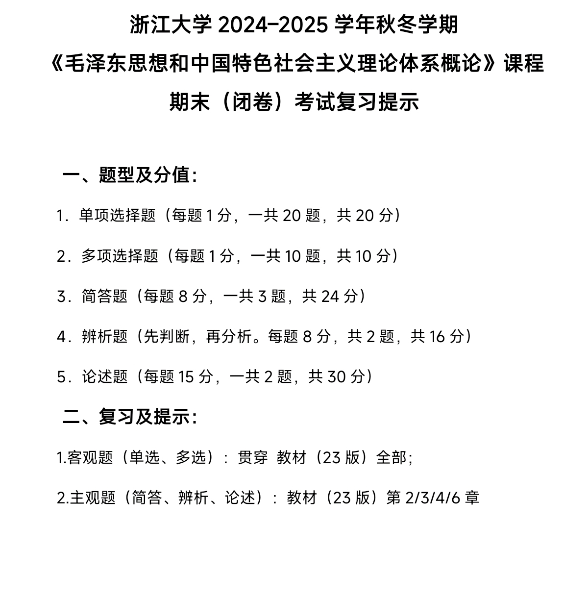

毛泽东思想和中国特色社会主义理论体系概论¶
约 51580 个字 1 张图片 预计阅读时间 172 分钟
[!TIP]

导论 马克思主义中国化时代化历史进程与理论成果¶
一、马克思主义中国化时代化的提出¶
- 拥有马克思主义科学理论导是中国共产党坚定信仰信念、把握历史主动的根本所在，是中国共产党鲜明的政治品格和强大的政治优势
- 十月革命一声炮响，给中国送来了马克思列宁主义
- 1921 年中国共产党应运而生。中国产生了共产党，这是开天辟地的大事变，中国革命的面貌从此焕然一新
- 中国共产党从成立之日起，就明确把马克思列宁主义确立为指导思想。然而，找到了马克思主义这个崭新的思想武器，并不意味着就能够自然而然地解决中国革命所面临的问题，还有一个如何把马克思主义基本原理同中国具体实际相结合、同中华优秀传统文化相结合的问题
- 1938 年，毛泽东在党的六届六中全会上作了《论新阶段》的报告。这标志着“马克思主义的中国化”这一命题的正式提出
- 1945 年，刘少奇代表党中央作了《关于修改党章的报告》，指出毛泽东思想是“中国化的马克思主义”。
- 马克思主义中国化同时包含着马克思主义时代化的意蕴。
- 2021 年，党的十九届六中全会通过的《中共中央关于党的百年奋斗重大成就和历史经验的决议》总结了百年来中国共产党推进马克思主义中国化时代化的重大成就，阐释了马克思主义中国化时代化的重大历史意义
- 2022 年，党的二十大明确把“不断谱写马克思主义中国化时代化新篇章”作为当代中国共产党人的庄严历史责任，并提出了继续推进马克思主义中国化时代化的新要求
- 推进马克思主义中国化时代化，是马克思主义理论本身发展的内在要求
- 推进马克思主义中国化时代化，是解决中国实际问题的客观需要
二、马克思主义中国化时代化的内涵¶
- 马克思主义中国化时代化，就是立足中国国情和时代特点，坚持把马克思主义基本原理同中国具体实际相结合、同中华优秀传统文化相结合，深入研究和解决中国革命、建设、改革不同历史时期的实际问题，真正搞懂面临的时代课题，不断吸收新的时代内容，科学回答时代提出的重大理论和实践课题，创造新的理论成果
- “解决中国问题”和“创造些新的东西”实际上指向马克思主义中国化时代化的科学内涵，具体包含三层意思
- 运用马克思主义的立场、观点和方法，观察时代、把握时代、引领时代，解决中国革命、建设、改革中的实际问题。
- 总结和提炼中国革命、建设、改革的实践经验并将其上升为理论，不断丰富和发展马克思主义的理论宝库，赋予马克思主义以新的时代内涵
- 运用中国人民喜闻乐见的民族语言来阐述马克思主义，使其植根于中华优秀传统文化的土壤之中，具有中国特色、中国风格、中国气派
- 准确把握马克思主义中国化时代化的科学内涵，要做到坚持马克思主义与发展马克思主义相统一
- 坚持和发展马克思主义，必须同中国具体实际相结合、同中华优秀传统文化相结合
三、马克思主义中国化时代化的历史进程¶
- 毛泽东思想是马克思主义中国化时代化的第一次历史性飞跃
- 新民主主义革命时期，开辟了农村包围城市、武装夺取政权的正确革命道路，创立了毛泽东思想
- 在社会主义革命和建设时期把马克思列宁主义基本原理同中国具体实际进行“第二次结合”，提出了关于社会主义建设的一系列重要思想
- 1978 年召开的党的十一届三中全会，实现了新中国成立以来党的历史上具有深远意义的伟大转折，开启了改革开放和社会主义现代化建设新时期。
- 围绕什么是社会主义、怎样建设社会主义这一根本问题
- 作出把党和国家工作中心转移到经济建设上来、实行改革开放的历史性决策
- 成功开创了中国特色社会主义。
- 十三届四中全会：江泽民
- 加深了对什么是社会主义、怎样建设社会主义和建设什么样的党、怎样建设党的认识，形成了 “三个代表”重要思
- 确立了社会主义市场经济体制的改革目标和基本框架
- 确立了社会主义初级阶段公有制为主体、多种所有制经济共同发展的基本经济制度和按劳分配为主体、多种分配方式并存的分配制度
- 党的十六大以后，以胡锦涛同志为主要代表
- 在全面建设小康社会进程中推进实践创新、理论创新、制度创新，深刻认识和回答了新形势下实现什么样的发展、怎样发展等重大问题，形成了科学发展
- 党的十八大以来，中国特色社会主义进入新时代，以习近平同志为主要代表的中国共产党
- 系统回答了新时代坚持和发展什么样的中国特色社会主义、怎样坚持和发展中国特色社会主义
- 建设什么样的社会主义现代化强国、怎样建设社会主义现代化强国
- 建设什么样的长期执政的马克思主义政党、怎样建设长期执政的马克思主义政党等重大时代课题，
- 实现了马克思主义中国化时代化新的飞跃
- 实践证明，中国共产党为什么能，中国特色社会主义为什么好，归根到底是马克思主义行，是中国化时代化的马克思主义行
- 马克思主义的科学性和真理性在中国得到充分检验，马克思主义的人民性和实践性在中国得到充分贯彻，马克思主义的开放性和时代性在中国得到充分彰显
四、马克思主义中国化时代化理论成果及其关系¶
中国共产党以马克思列宁主义、毛泽东思想、邓小平理论、“三个代表”重要思想、科学发展观、习近平新时代中国特色社会主义思想作为自己的指导思想和行动指南
- 马克思列宁主义揭示了人类社会历史发展的规律，是认识世界、改造世界的科学真理，它的基本原理是正确的，具有强大的生命力
- 在新民主主义革命、社会主义革命和建设时期创立的毛泽东思想
- 是马克思列宁主义在中国的运用和发展
- 是被实践证明了的关于中国革命和建设的正确的理论原则和经验总结
- 是中国共产党集体智慧的结晶
- 中国特色社会主义理论体系是指导党和人民沿着中国特色社会主义道路实现中华民族伟大复兴的正确理论，是立于时代前沿、与时俱进的科学理论
- 十一届三中全会，邓小平理论，是中国特色社会主义理论体系的开篇之作
- 十三届四中全会，“三个代表”重要思想，推动了中国特色社会主义理论体系的跨世纪发展
- 十六大，科学发展观，实现了中国特色社会主义理论体系在新世纪新阶段的新发展
- 十七大， " 中国特色社会主义理论体系”的科学概念，标志着中国特色社会主义理论和实践的进一步成熟
- 十八大以来，习近平新时代中国特色社会主义思想
- 马克思主义中国化时代化的理论成果是一脉相承又与时俱进的关系
- 一方面，毛泽东思想所蕴含的马克思主义的立场、观点和方法，为中国特色社会主义理论体系提供了基本遵循
- 实事求是、群众路线、独立自主是毛泽东思想活的灵魂，这一具有中国共产党人特色的立场、观点和方法也贯穿于中国特色社会主义理论体系之中
- 另一方面，中国特色社会主义理论体系在新的历史条件下进一步丰富和发展了毛泽东思想
- 提出走自己的路、建设中国特色社会主义，丰富发展了毛泽东思想关于社会主义建设道路理论；
- 提出中国正处于并将长期处于社会主义初级阶段，丰富发展了毛泽东思想关于中国社会主义发展阶段理论
- 提出中国式现代化，建设富强民主文明和谐美丽的社会主义现代化国家，丰富发展了毛泽东思想关于社会主义“四个现代化”理论
- 提出全面从严治党，推进党的建设新的伟大工程，以党的自我革命引领社会革命，丰富发展了毛泽东思想关于党的建设理论
- 提出走和平发展道路，推动构建人类命运共同体，丰富发展了毛泽东思想关于独立自主和平外交的理论
- 毛泽东思想、邓小平理论、“三个代表”重要思想、科学发展观、习近平新时代中国特色社会主义思想同马克思列宁主义一起，都是党和国家必须长期坚持的指导思想，是全国各族人民团结奋斗的共同思想基础
五、学习本课程的要求和方法¶
第一章 毛泽东思想及其历史地位¶
毛泽东思想为中华民族伟大复兴根本社会条件的创造、根本政治前提和制度基础的奠定提供了科学指南，至今依然闪耀看真理光芒
第一节 毛泽东思想的形成和发展¶
一、毛泽东思想形成发展的历史条件¶
- 19 世纪中叶，唯物史观和剩余价值学说，社会主义思想奠定了科学理论基础，创立了科学社会主义
- 19 世纪末 20 世纪初，战争与革命
- 1917 年俄国十月革命的胜利
- 第二次世界大战后两大阵营的对立和斗争
- 毛泽东思想正是对这些经验教训进行深刻总结形成的理论成果
- 中国共产党领导人民进行革命和建设的成功实践是毛泽东思想形成和发展的实践基础。
二、毛泽东思想形成发展的过程¶
- 毛泽东思想的形成
- 大革命时期
- 《中国社会各阶级的分析》《湖南农民运动考察报告》
- 强调无产阶级领导农民斗争在推翻反动政权、建立人民革命政权中的重大作用，从而解决了无产阶级领导权的中心问题，即如何领导农民斗争的问题
- 这些关于新民主主义革命基本思想的提出，标志着毛泽东思想开始萌芽
- 土地革命战争时期
- 坚持以武装的革命反对武装的反革命
- 八七会议确定实行土地革命和武装起义的方针
- 转为向农村进军，是中国革命具有决定意义的新起点
- 成功地把党的工作重点由城市转入农村，开辟了农村包围城市、武装夺取政权的革命道路
- 《中国的红色政权为什么能够存在？》《井冈山的斗争》《星星之火，可以燎原》《反对本本主义》
- 毛泽东提出并深入阐述的农村包围城市、武装夺取政权的思想，对红军和农村革命根据地的建立、巩固和发展发挥着根本指导作用，标志着毛泽东思想的初步形成
- 毛泽东思想的成熟
- 遵义会议
- 事实上确立了毛泽东同志在党中央和红军的领导地位
- 开始确立以毛泽东同志为主要代表的马克思主义正确路线在党中央的领导地位
- 开始形成以毛泽东同志为核心的党的第一代中央领导集体，
- 开启了党独立自主解决中国革命实际问题的新阶段
- 在最危急关头挽救了党、挽救了红军、挽救了中国革命
- 系统阐述了新民主主义革命理论，标志着毛泽东思想得到多方面展开而趋于成熟。
- 《实践论》《矛盾论》
- 系统分析了党内“左”的和右的错误的思想根源。
- 《〈共产党人〉发刊词》《中国革命和中国共产党》《新民主主义论》《改造我们的学习》《论联合政府》
- 新民主主义革命的对象、动力、领导力量、性质和前途等基本问题
- 提出了新民主主义革命的总路线
- 制定了相应的经济、政治、文化纲领
- 指明了新民主主义革命的具体目标
- 论述了统一战线、武装斗争和党的建设的基本规律和内在联系，为新民主主义革命的胜利找到了正确方法
- 《实践论》《矛盾论》
- 《关于若干历史问题的决议》充分肯定了确立毛泽东在全党领导地位的重大意义
- 1945 年党的七大，《中国共产党党章》
- 标志着把毛泽东思想确立为党必须长期坚持的指导思想
- 毛泽东思想的继续发展
- 明确提出了把马克思列宁主义基本原理同中国具体实际进行“第二次结合，找出在中国怎样建设社会主义的道路”的任务
- 《论人民民主专政》《论十大关系》《关于正确处理人民内部矛盾的问题》
第二节 毛泽东思想的主要内容和活的灵魂¶
一、毛泽东思想的主要内容¶
- 新民主主义革命理论 创立了无产阶级领导的，工农联盟为基础的，人民大众的，反对帝国主义、封建主义和官僚资本主义的新民主主义革命理论
- 中国资产阶级有两个部分：依附于帝国主义的大资产阶级和既有革命要求又有动摇性的民族资产阶级。
- 由于帝国主义的侵略，加之中国没有资产阶级民主，因此中国革命只能以长期的武装斗争为主要形式
- 农民是无产阶级最可靠的同盟军
- 统一战线、武装斗争和党的建设，是中国共产党在中国革命中战胜敌人的三大法宝
- 是反映新民主主义革命客观规律的完备的理论形态。
- 社会主义革命和社会主义建设理论
- 社会主义工业化和社会主义改造并举的方针
- 把对人民内部的民主和对敌人的专政互相结合起来就是人民民主专政的理论
- 社会主义制度建立后，提出把马克思列宁主义基本原理同中国具体实际进行“第二次结合
- 社会主义社会是一个很长的历史阶段，可分为不发达的社会主义和比较发达的社会主义两个阶段，后一阶段可能比前一阶段需要更长的时间
- 矛盾
- 社会主义社会仍然存在着矛盾，基本的矛盾仍然是生产关系和生产力之间的矛盾、上层建筑和经济基础之间的矛盾；
- 敌我矛盾和人民内部矛盾
- 方针
- 人民内部要在政治上实行“团结一批评一团结”，
- 在党与民主党派的关系上实行“长期共存、互相监督”，
- 在科学文化工作中实行“百花齐放、百家争鸣”，
- 在经济工作以及其他各项工作中实行“统筹兼顾、适当安排
- 从中国是一个农业大国这种情况出发，以工业为主导，以农业为基础，正确处理重工业同农业、轻工业的关系
- 处理关系
- 经济建设和国防建设、
- 大型企业和中小企业、
- 汉族和少数民族、
- 沿海和内地、
- 中央和地方、
- 自力更生和学习外国
- 积累和消费的关系
- 发展商品生产、尊重价值规律
- “两参一改三结合
- 干部参加劳动，工人参加管理
- 改革不合理的规章制度
- 工人群众、领导干部和技术人员三结合
- 调动一切积极因素，化消极因素为积极因素，团结全国各族人民建设社会主义强大国家
- 个又有集中又有民主，又有纪律又有自由，又有统一意志、又有个人心情舒畅、生动活泼，那样一种政治局面
- 革命军队建设和军事战略的理论
- 解决了
- 把以农民为主要成分的革命军队建设成为一支无产阶级性质的、具有严格纪律的、同人民群众保持亲密联系的新型人民军队的问题
- 如何开展人民革命战争，应当实行什么样的战略战术，如何巩固国防
- 规定了
- 党对军队绝对领导
- 全心全意为人民服务是人民军队的唯一宗旨
- 三大纪律、八项注意
- 实行政治、经济、军事三大民主
- 官兵一致、军民一致和瓦解敌
- 建设人民军队的思想
- 把游击战争提到了战略的地位、
- 解放战争中总结出著名的十大军事原则
- “三湾改编”：建设无产阶级领导的新型人民军队的重要开端。
- 政策和策略的理论
- 指出政策和策略是党的生命
- 重要政策和策略
- 弱小的革命力量在变化着的主客观条件下能够最终战胜强大的反动力量
- 战略上要藐视敌人，战术上要重视敌人
- 掌握斗争的主要方向，不要四面出击
- 对敌人要区别对待、分化瓦解，实行利用矛盾、争取多数、反对少数、各个击破的策略，并做到有理、有利、有节
- 在反动统治地区，把公开斗争和秘密斗争结合起来，在组织上采取隐蔽精干的方针
- 对被打倒的反动统治阶级成员和反动分子，只要他们不造反、不捣乱，都给予生活出路，让他们在劳动中改造成为自食其力的劳动者
- 无产阶级及其政党要实现自己对同盟者的领导，必须具备两个条件
- 率领被领导者向着共同的敌人作坚决斗争并取得胜利
- 对被领导者给以物质利益
- 思想政治工作和文化工作的理论
- 思想政治工作是经济工作和其他一切工作的生命线，要实行政治和经济的统一、政治和技术的统一、又红又专的方针
- 发展民族的、科学的、大众的文化，实行百花齐放、百家争鸣和古为今用、洋为中用、推陈出新的方针
- 知识分子在革命和建设中具有重要作用，知识分子要同工农相结合，通过学习马克思列宁主义、学习社会和工作实践, 树立无产阶级世界观
- 党的建设理论
- 提出党员不但要在组织上入党，而且要在思想上入党
- 理论和实践相结合的作风，和人民群众紧密地联系在一起的作风，以及自我批评的作风，是中国共产党区别于其他任何政党的显著标志
- 继续地保持谦虚、谨慎、不骄、不躁的作风，务必使同志们继续地保持艰苦奋斗的作风
- 警惕资产阶级思想的侵蚀.反对脱离群众的官僚主义
二、毛泽东思想活的灵魂¶
- 实事求是
- 重要性
- 实事求是是毛泽东思想的基本点，是毛泽东思想的精髓
- 实事求是，是马克思主义的根本观点，是中国共产党人认识世界、改造世界的根本要求，是我们党的基本思想方法、工作方法、领导方法。
- 历史
- 1930 年，《反对本本主义》： “没有调查，没有发言权”
- 1937 年，《实践论》和《矛盾论》：解释主观主义，特别是教条主义错误的根源
- 1938 年，六届六中全会：传统文化中的“实事求是”命题
- 经过延安整风和党的七大，实事求是的思想路线在全党得到了确立
- 方法论
- 坚持实事求是，就要深入实际了解事物的本来面貌，把握事物内在必然联系，按照客观规律办事
- 坚持实事求是，就要清醒认识和正确把握我国基本国情
- 坚持实事求是，就要不断推进实践基础上的理论创新
- 群众路线
- 重要性
- 我们党的生命线和根本工作路线
- 党永葆青春活力和战斗力的重要传家
- 世界观
- 群众观点：一切为了群众，一切依靠群众
- 群众路线：一切为了群众，一切依靠群众，从群众中来，到群众中去，把党的正确主张变为群众的自觉行动
- 本质上体现的是马克思主义关于人民群众是历史的创造者这一基本原理
- 方法论
- 坚持群众路线，就要坚持人民是推动历史发展的根本力量
- 调动最广大人民的积极性、主动性、创造性，充分发挥人民群众的历史主体作用。
- 正确行使人民给予的权力，服务人民、为了人民、依靠人民，自觉接受人民批评和监督，紧紧依靠人民创造历史伟业
- 坚持群众路线，就要坚持全心全意为人民服务的根本宗旨。
- 全心全意为人民服务，是我们党一切行动的根本出发点和落脚点
- 检验党的一切工作的成效，最终要以最广大人民根本利益为最高标准。
- 坚持群众路线，就要保持党同人民群众的血肉联系。
- 要把群众观点、群众路线深深植根于全党同志思想中，真正落实到每个党员行动上
- 坚持群众路线，就要坚持人民是推动历史发展的根本力量
- 独立自主
- 重要性
- 坚持独立思考，走自己的路，就是坚定不移地维护民族独立、捍卫国家主权，把立足点放在依靠自己力量的基础上，同时积极争取外援，开展国际经济文化交流
- 世界观
- 针对党内存在的“左”倾教条主义
- 《反对本本主义》：中国革命斗争的胜利要靠中国同志了解中国情况
- 独立自主是中华民族精神之魂
- 方法论
- 坚持独立自主，就要坚持中国的事情必须由中国人民自己作主张、自己来处理。
- 这种坚持走自己的路的坚定信心和决心，是我们党全部理论和实践的立足点，也是党和人民事业不断从胜利走向胜利的根本保证
- 坚持独立自主，就要坚持独立自主的和平外交政策，坚定不移走和平发展道路。
- 恪守维护世界和平、促进共同发展的外交宗旨
- 坚持在和平共处五项原则基础上同各国友好相处，在平等互利基础上积极开展同各国的交流合作
- 中国无论发展到什么程度都永远不称霸，永远不搞扩张。
- 坚持独立自主，就要坚持中国的事情必须由中国人民自己作主张、自己来处理。
第三节 毛泽东思想的历史地位¶
一、马克思主义中国化时代化的第一个重大理论成果¶
- 毛泽东思想是马克思主义中国化时代化第一次历史性飞跃的理论成果
- 实事求是、群众路线、独立自主是毛泽东把辩证唯物主义和历史唯物主义运用到中国革命和建设实践中所形成的具有中国共产党人鲜明特色的立场、观点、方法，是我们党进行革命、建设和改革的出发点、根本点和立足点，为党和人民事业发展提供了科学指引
- 为中国特色社会主义理论体系的形成奠定了理论基础
- 话语表达做到了理论的通俗化，以通俗的言语解释深刻道理
- 在表达方式上具有鲜明的民族特色
- 独特理论品格，给新时代党的理论创新、进一步推进马克思主义大众化以重要的启迪
二、中国革命和建设的科学指南¶
- 毛泽东思想是被实践证明了的关于中国革命和建设的正确的理论原则和经验总结。
- 毛泽东思想关于 社会主义建设理论 的基本思想观点，仍具有重要的现实指导作用。
三、中国共产党和中国人民宝贵的精神财富¶
- 毛泽东追求和倡导的中华民族重新自立于世界民族之林的远大理想，实事求是的思想路线，全心全意为人民服务的根本宗旨，自力更生、艰苦奋斗的革命精神，等等，依然是中国人民不断奋进的强大精神动力，将长期激励和指导我们前进
- 怎样科学评价毛泽东和毛泽东思想的问题
- “文化大革命”结束后，两种错误倾向
- 毛泽东作出的一切决策、指示，都必须坚决维护、始终遵循
- 借口毛泽东晚年犯了严重错误，全面否定毛泽东的历史地位与毛泽东思想的科学价值和指导作用
- 《中国共产党中央委员会关于建国以来党的若干历史问题的决议》对毛泽东和毛泽东思想的历史地位作出了科学的、实事求是的评价，对于统一全党的认识起到了重要作用，得到了全党的拥护
- 毛泽东是伟大的马克思主义者，伟大的无产阶级革命家、战略家和理论家
- 毛泽东的功绩是第一位的，错误是第二位的
第二章 新民主主义革命理论¶
第一节 新民主主义革命理论形成的依据¶
一、近代中国国情和中国革命的时代特征¶
1. 近代中国国情¶
- 鸦片战争，逐步成为半殖民地半封建社会
- 帝国主义的侵略虽然在一定程度上促使封建社会自给自足的自然经济解体，在客观上为中国资本主义的发展创造了一定条件，但中国不可能发展成为资本主义国家
- 经济上：地主阶级、买办资本、高利贷资本剥削
- 政治上，先是地主阶级军阀官僚的统治，接着是地主阶级和大资产阶级联盟的专政，没有变成资本主义社会
- 另一方面，帝国主义列强通过政治的、经济的和文化的侵略，使中国半殖民地化
- 帝国主义和封建主义的双重压迫
- 占支配地位的主要矛盾是帝国主义和中华民族的矛盾、封建主义和人民大众的矛盾，而帝国主义和中华民族的矛盾，又是各种矛盾中最主要的矛盾。
2. 近代中国革命的时代特征¶
- 近代中国的社会性质和主要矛盾，决定了中国革命仍然是资产阶级民主革命。
- 俄国十月革命是一个具有划时代意义的世界性历史事件，以此为标志，中国资产阶级民主革命的时代背景发生了根本转换。
- 使中国的资产阶级民主主义革命，从原来属于旧的世界资产阶级民主主义革命的范畴转变为属于新的资产阶级民主主义革命的范畴，从旧的世界资产阶级民主主义革命的一部分转变为世界无产阶级社会主义革命的一部分
- 五四运动
- 以五四运动为标志，中国无产阶级开始作为独立的政治力量登上历史舞台，成为革命的领导力量，马克思列宁主义逐步成为中国革命的指导思想，中国革命进入新民主主义革命阶段
- 由此中国革命分两步走，第一步是完成反帝反封建的新民主主义革命任务，第二步是完成社会主义革命任务
二、新民主主义革命理论的实践基础¶
1. 旧民主主义革命的失败呼唤新的革命理论¶
- 辛亥革命推翻了统治中国几千年的君主专制制度，但未能改变中国半殖民地半封建的社会性质和中国人民的悲惨命运
- 新民主主义革命理论在近代中国革命的实践中应运而生，它的形成包含了对旧民主主义革命失败教训的深刻总结。
2. 新民主主义革命的艰辛探索奠定了革命理论形成的实践基础¶
- 党的幼年时期
- 在革命的实践斗争中犯过一些错误，走过一些弯路，遭受了大革命失败的严重损失
- 坚持以马克思主义为指导，注重把马克思主义基本原理同中国革命实际相结合，善于总结革命的经验教训，把握中国革命的规律性
- 农村包围城市、武装夺取政权的革命道路
- 政权是由枪杆子中取得的
- 工农武装割据
- 毛泽东思想形成发展的过程|遵义会议
- 到抗日战争时期，中日民族矛盾逐渐超越国内阶级矛盾上升为主要矛盾。
- 开展延安整风，收到巨大成
- 《关于若干历史问题的决议》，
- 理论来源于实践
第二节 新民主主义革命的总路线和基本纲领¶
一、新民主主义革命的总路线¶
1939 年，《中国革命和中国共产党》，第一次提出“新民主主义的革命”
1948 年，《在晋绥干部会议上的讲话》，完整地总结和概括了新民主主义革命总路线的内容，即 无产阶级领导的，人民大众的，反对帝国主义、封建主义和官僚资本主义的革命
1. 新民主主义革命的对象¶
- 帝国主义是中国革命的首要对象
- 封建地主阶级是帝国主义统治中国和封建军阀实行专制统治的社会基础。
- 帝国主义是封建地主阶级的靠山，地主阶级是帝国主义统治中国的主要社会基础
- 民族革命和民主革命两个基本任务，既相互区别，又相互统一
- 官僚资本主义是依靠帝国主义、勾结封建势力、利用国家政权力量而发展起来的买办的、封建的国家垄断资本主义
[!note] 不同历史阶段，革命的主要对象不同：
- 国共合作的大革命时期：帝国主义支持下的北洋军阀
- 土地革命时期：国民党新军阀
- 抗日战争时期：日本帝国主义
- 解放战争时期：美帝国主义支持下的国民党反动派
2. 新民主主义革命的动力¶
- 无产阶级是中国革命最基本的动力
- 无产阶级是新的社会生产力的代表，是近代中国最进步的阶级，是中国革命的领导力量
- 农民是中国革命的主力军
- 农民问题是中国革命的基本问题，新民主主义革命实质上就是党领导下的农民革命，中国革命战争实质上就是党领导下的农民战争
- 工人阶级对农民的领导，是实现革命领导权的基础。
- 城市小资产阶级是无产阶级的可靠同盟者。
- 民族资产阶级也是中国革命的动力之一
- 一方面，民族资产阶级既受帝国主义的压迫，又受封建主义的束缚，它同帝国主义和封建主义有矛盾
- 另一方面，由于它在经济上和政治上与帝国主义和封建主义有着千丝万缕的联系，没有彻底的反帝反封建的勇气
3. 新民主主义革命的领导力量¶
无产阶级的领导权 是中国革命的中心问题，也是新民主主义革命理论的核心问题。
- 无产阶级及其政党的领导，是中国革命取得胜利的根本保证。
- 帝国主义不允许中国民族资产阶级建立独立的资产阶级共和国，而是要把中国变成它们的殖民地和半殖民地
- 中国民族资产阶级的软弱性和妥协性
- 中国无产阶级的强大和革命的彻底性
- 中国无产阶级除了具有与先进的生产方式相联系、没有私人占有的生产资料、富于组织纪律性等一般无产阶级的基本优点外，还具有自身的特点和优点
- 三重压迫，在革命斗争中比任何别的阶级都来得坚决和彻底。
- 集中分布在少数大城市和大企业，有利于组织和团结
- 和农民有着天然的联系，便于和农民结成亲密的联盟
4. 新民主主义革命的性质和前途¶
- 现阶段中国革命的性质，不是无产阶级社会主义的，而是资产阶级民主主义的。
- 已不是旧式的一般的资产阶级民主主义的革命，而是新式的特殊的资产阶级民主主义的革命
- 新民主主义革命处于世界无产阶级社会主义革命的时代，是世界无产阶级社会主义革命的一部分
- 领导力量是中国无产阶级及共产党
- 革命的指导思想是马克思列宁主义
- 革命的前途是社会主义
- 新民主主义革命与社会主义革命性质不同
- 新民主主义革命与社会主义革命又是互相联系、紧密衔接的，中间不容横插一个资产阶级专政
二、新民主主义的基本纲领¶
1940 年，《新民主主义论》，阐述了新民主主义的政治、经济和文化 1945 年，《论联合政府》，进一步把新民主主义的政治、经济和文化与党的基本纲领联系起来，进行了具体阐述，形成了新民主主义的基本纲领
1. 新民主主义的政治纲领¶
推翻帝国主义和封建主义的统治，建立一个无产阶级领导的、以工农联盟为基础的、各革命阶级联合专政的新民主主义的共和国
- 新民主主义国家的国体是无产阶级领导的以工农联盟为基础，包括小资产阶级、民族资产阶级和其他反帝反封建的人们在内的各革命阶级的联合专政
- 与新民主主义国体相适应的政体，是实行民主集中制的人民代表大会制度。
2. 新民主主义的经济纲领¶
没收封建地主阶级的土地归农民所有，没收官僚资产阶级的垄断资本归新民主主义的国家所有，保护民族工商业。
- 没收封建地主阶级的土地归农民所有，是 新民主主义革命的主要内容
- 实行“耕者有其田”，把土地变为农民的私产
- 土地改革所依靠的基本力量，只能和必须是贫农
- 没收官僚资本归新民主主义国家所有，是新民主主义革命的题中应有之义
- 并非因为它是资本主义，而是因为这种资本主义同外国帝国主义、本国地主阶级和旧式富农密切地结合着，是一种买办的封建的国家垄断资本主义
- 同大地主大资产阶级的反革命国家政权密切结合着，成为国民党统治的经济基础
- 对中国的经济发展和社会进步起着严重的阻碍作用
- 保护民族工商业，是新民主主义经济纲领中极具特色的一项内容
- 它只推翻帝国主义和汉奸反动派在中国的统治，而不破坏任何尚能参加反帝反封建的资本主义成分
- 民族资本主义经济，是一种与新生产力相联系的先进的生产方式和经济成分，它对发展现代技术、发展社会生产力具有积极作用
3. 新民主主义的文化纲领¶
新民主主义文化，就是无产阶级领导的人民大众的反帝反封建的文化，即民族的科学的大众的文化
- 新民主主义文化是民族
- 内容：反对帝国主义压迫，主张中华民族的尊严和独立
- 形式：具有鲜明的民族风格、民族形式和民族特色，要有中国作风和中国气派
- 要大量吸收外国的进步文化
- 新民主主义文化是科学的，反对一切封建思想和迷彳言思想，主张实事求是、客观真理及理论和实践的一致性。
- 新民主主义文化是大众的，是为全民族中绝大多数工人阶级和劳动群众服务的，主张文化普及于大众又提高大众，因而也是民主的。
第三节 新民主主义革命的道路和基本经验¶
一、新民主主义革命的道路¶
一条不同于俄国十月革命的道路，即农村包围城市、武装夺取政权的革命道路。
1. 新民主主义革命道路的提出¶
- 初期工作重心放在城市
- 1927 年大革命失败后，党的工作重心开始转向农村
- 秋收起义失败后，毛泽东率领队伍开赴井冈山，创建了井冈山革命根据地，把武装斗争的主攻方向首先指向农村
- 工农武装割据”思想
- 《中国的红色政权为什么能够存在？》
- 《井冈山的斗争》
- 《星星之火，可以燎原》
- 1938 年，六届六中全会：确立了经过长期武装斗争，先占乡村，后取城市，最后夺取全国胜利的革命道路。
2. 新民主主义革命道路形成的必然性¶
- 必然性
- 在半殖民地半封建的中国社会，内无民主制度而受封建主义的压迫，外无民族独立而受帝国主义的压迫。
- 近代中国是一个农业大国，农民占全国人口的绝大多数，是无产阶级可靠的同盟军和革命的主力军
- 可能性
- 近代中国是多个帝国主义间接统治的经济落后的半殖民地国家，社会政治经济发展极端不平衡，四分五裂，军阀割据，存在不少的统治薄弱环节
- 近代中国的广大农村深受反动统治阶级的多重压迫和剥削，人民革命愿望强烈，加之经历过大革命的洗礼，革命的群众基础好
- 全国革命形势的继续向前发展，为在农村建设革命根据地提供了客观条件
- 相当力量正式红军的存在，为农村革命根据地的创立、巩固和发展提供了坚强后盾
- 党的领导的有力量及其政策的不错误，为农村革命根据地建设和发展提供了重要的主观条件
3. 新民主主义革命道路的内容及意义¶
中国革命走农村包围城市、武装夺取政权的道路，根本在于处理好土地革命、武装斗争、农村革命根据地建设三者之间的关系
- 土地革命是中国革命的基本内容
- 武装斗争是中国革命的主要形式，是农村根据地建设和土地革命的强有力保证
- 农村革命根据地是中国革命的战略阵地，是进行武装斗争和开展土地革命的依
二、新民主主义革命的三大法宝¶
《〈共产党人〉发刊词》提出了统一战线、武装斗争、党的建设是党在中国革命中战胜敌人的三个主要的法宝
1. 统一战线¶
- 统一战线是无产阶级政党策略思想的重要内容
- 由中国半殖民地半封建社会的阶级状况所决定
- 由中国革命的长期性、残酷性及其发展的不平衡性所决定
- 诸多矛盾交织在一起，客观上为无产阶级及其政党利用这些矛盾建立和发展统一战线提供了可能性
- 民族压迫：把一切爱国的、不愿受帝国主义奴役的人们团结在自己的周围
- 民族资产阶级深受帝国主义和封建主义的压迫
- 受别的帝国主义支持的官僚资产阶级集团也可能在一定程度上和一定时期内参加统一战线
- 统一战线包括两个联盟
- 一个是工人阶级同农民阶级、广大知识分子及其他劳动者的联盟，主要是工农联盟
- 另一个是工人阶级和非劳动人民的联盟，主要是与民族资产阶级的联盟
- 总结实践经验
- 建立巩固的工农联盟
- 正确对待资产阶级，尤其是民族资产阶级：既联合又斗争
- 采取区别对待的方针
2. 武装斗争¶
- 武装斗争是中国革命的特点和优点之一。
- 建设人民军队的经验
- 坚持党对军队的绝对领导
- 建设新型人民军队的根本原则
- 保持人民军队无产阶级性质和建军宗旨的根本前提
- 毛泽东建军思想的核心
- 建设全心全意为人民服务的人民军队
- 建设新型人民军队的基本前提
- 人民军队一切行动的根本准则和一切工作的出发点与归宿
- 开展革命的政治工作
- 官兵一致的原则
- 军民一致的原则
- 瓦解敌军和优待俘虏的原则
- 坚持正确的战略战术原则
3. 党的建设¶
- 把思想建设始终放在党的建设的首位
- 在任何时候都重视党的组织建设：民主集中制
- 重视党的作风建设
- 理论联系实际
- 密切联系群众
- 批评与自我批评相结合
- 联系党的政治路线加强党的建设
三、新民主主义革命理论的意义¶
- 揭示了近代中国革命发展的客观规律，解决了中国革命的一系列理论问题，科学地回答了中国革命向何处去的问题，以及中国革命的发展阶段问题，极大地丰富了马克思主义的理论宝库
- 1949 年建立了中华人民共和国，实现了民族独立、人民解放
- 极大改变了世界政治格局，鼓舞了全世界被压迫民族和被压迫人民争取解放的斗争
第三章 社会主义改造理论¶
第一节 从新民主主义到社会主义的转变¶
一、新民主主义社会是一个过渡性的社会¶
- 新民主主义社会中的经济成分
- 社会主义性质的国营经济
- 半社会主义性质的合作社经济：个体经济向社会主义集体经济过渡的形式
- 农民和手工业者的个体经济
- 私人资本主义经济
- 国家资本主义经济：私人资本主义经济向社会主义国营经济过渡的形式
- 新民主主义社会中的阶级
- 土地改革的基本完成，工人阶级和资产阶级的矛盾逐步成为我国社会的主要矛盾。
- 新民主主义社会是属于社会主义体系的，是逐步过渡到社会主义社会的过渡性质的社会。
二、党在过渡时期的总路线及其依据¶
1. 党在过渡时期的总路线的提出¶
- 1949 年，七届二中全会：" 稳步地由农业国转变为工业国，由新民主主义国家转变为社会主义国家“
- 1951 年：党内大体形成了先用三个五年计划的时间搞工业化建设，再向社会主义过渡的共识
- 1949-1952 年：完成土地改革，进行社会各方面民主改革，实行男女权利平等，镇压反革命运动，开展“三反”“五反”运动，荡涤旧社会留下的污泥浊水，社会面貌焕然一新
- 1952 年，国民经济得以恢复，民主革命遗留任务已经完成，经济、政治及社会面貌发生巨大变化。这是酝酿提出过渡时期总路线的开始
- 1953 年正式提出过渡时期的总路线和总任务
- 党在过渡时期总路线的主要内容被概括为“一化三改”
- “一化”即社会主义工业化
- “三改”即对个体农业、手工业和资本主义工商业的社会主义改造
2. 党在过渡时期的总路线的理论依据¶
《为动员一切力虽把我国建设成为一个伟大的社会主义国家而斗争一关于党在过渡时期总路线的学习和宣传提纲》
3. 党提出过渡时期总路线的现实依据¶
- 经过 1949 年到 1952 年三年的努力，我国已经有了相对强大和迅速发展的社会主义国营经济
- 这为党提出向社会主义过渡的总路线提供了物质基础
- 土地改革完成后，为发展生产、抵御自然灾害，广大农民具有走互助合作道路的要求
- 新中国成立初期，党和国家在合理调整工商业的过程中，出现了加工订货、经销代销、统购包销、公私合营等一系列从低级到高级的国家资本主义形式。
- 当时的国际形势也有利于中国向社会主义过渡
第二节 社会主义改造道路和历史经验¶
一、适合中国特点的社会主义改造道路¶
1. 农业、手工业的社会主义改造：¶
1956 年底基本完成
- 对农业的社会主义改造，是三大改造中首先进行的
- 积极引导农民组织起来，走互助合作道路
- 遵循自愿互利、典型示范和国家帮助的原则，以互助合作的优越性吸引农民走互助合作道路。
- 正确分析农村的阶级和阶层状况，制定正确的阶级政策：依靠贫下中农
- 坚持积极领导、稳步前进的方针，采取循序渐进的步骤：互助组 ➡️ 初级社 ➡️ 高级社
- 对手工业的社会主义改造是通过合作化道路，把个体手工业经济改造成为社会主义经济的过程：积极领导、稳步前进
- 办手工业供销小组：具有社会主义萌芽性质
- 办手工业供销合作社
- 建立手工业生产合作社
2. 资本主义工商业的社会主义改造¶
- 用和平赎买的方法改造资本主义工商业
- 首先，民族资产阶级具有两面性
- 其次，中国共产党与民族资产阶级长期保持着统一战线的关系，
- 私人资本主义在政治上、经济上对社会主义的依赖。
- 采取从低级到高级的国家资本主义的过渡形式
- 初级形式的国家资本主义：四马分肥
- 主要实行个别企业的公私合营
- 实行全行业的公私合营
- 把资本主义工商业者改造成为自食其力的社会主义劳动者
二、社会主义改造的历史经验¶
- 坚持社会主义工业化建设与社会主义改造同时并举
- 采取积极引导、逐步过渡的方式。
- 用和平方法进行改造。
第三节 社会主义基本制度在中国的确立¶
一、社会主义基本制度的确立及其理论根据¶
社会主义改造的基本完成和由此带来的社会各方面的变化，表明社会主义制度已经在: 我国的经济领域、政治领域及社会生活其他领域基本确立，表明我国由一个新民主主义的国家转变为社会主义国家
- 1956 年，社会主义公有制已成为我国社会的经济基础，标志着中国历史上长达数千年的阶级剥削制度的结束和社会主义基本制度的确立。
- 随着社会主义改造的进行，我国的人民民主政治建设也在有步骤地向前推进
- 1954 年，第一届全国人大，《中华人民共和国宪法》
- 我国社会的阶级关系也发生了根本的变化
- 理论依据
- 中国可以在没有实现工业化的情况下进入社会主义，社会主义基本制度的确立正是为了推进中国的工业化、现代化建设
- 由于经济文化还比较落后，中国的社会主义还只能是初级阶段的社会主义，或者叫社会主义初级阶段
- 进一步改变了世界政治经济格局，增强了社会主义的力量
二、确立社会主义基本制度的重大意义¶
是中国历史上最深刻最伟大的社会变革，为当代中国一切发展进步奠定了制度基础，也为中国特色社会主义制度的创新和发展提供了重要前提。
- 为当代中国一切发展进步奠定了制度基础
- 我国社会生产力的发展，初步显示了社会主义的优越性。
- 中国共产党深刻认识到，实现中华民族伟大复兴，必须建立符合我国实际的先进社会制度。
- 它不仅再次证明了马克思列宁主义的真理性，而且以其独创性的理论原则和经验总结丰富和发展了科学社会主义理论。
第四章 社会主义建设道路 初步探索的理论成果¶
第一节 初步探索的重要理论成果¶
一、调动一切积极因素为社会主义事业服务¶
- 《论十大关系》标志着党探索中国社会主义建设道路的良好开端。
- 重工业和轻工业、农业的关系
- 沿海工业和内地工业的关系
- 经济建设和国防建设的关系
- 国家、生产单位和生产者个人的关系
- 中央和地方的关系
- 汉族和少数民族的关系
- 党和非党的关系
- 革命和反革命的关系
- 是非关系
- 中国和外国的关系
- 方法论
- 调动一切积极因素为社会主义事业服务，必须坚持中国共产党的领导
- 调动一切积极因素为社会主义事业服务，必须发展社会主义民主政治
二、正确认识和处理社会主义社会矛盾的思想¶
- 《关于正确处理人民内部矛盾的问题》系统论述了社会主义社会矛盾的理论
- 基本矛盾：生产关系和生产力之间的矛盾，上层建筑和经济基础之间的矛盾
- 主要矛盾：人民对于经济文化迅速发展的需要同当前经济文化不能满足人民需要的状况之间的矛盾
- 两类不同性质的矛盾
- 敌我矛盾：对抗性的矛盾，专政方法
- 人民内部矛盾：非对抗性的矛盾，民主方法
- 政治思想领域矛盾：团结——批评——团结
- 物质利益、分配方面矛盾：统筹兼顾、适当安排
- 人民群众和政府机关的矛盾：坚持民主集中制原则，努力克服政府机关的官僚主义，也要加
- 科学文化领域里的矛盾：百花齐放、百家争鸣”
- 共产党和民主党派的矛盾：在坚持社会主义道路和共产党领导的前提下“长期共存、互相监督”的方针
- 民族之间的矛盾：民族平等、团结互助强对群众的思想教育
三、走中国工业化道路的思想¶
以工业为主导，把重工业作为我国经济建设的重点，以逐步建立独立的比较完整的基础工业体系和国防工业体系 总方针：以工业为主导，以农轻重为序 “两条腿走路”，重工业和轻工业同时并举
- 必须采取正确的经济建设方针
- 既反保守又反冒进、坚持在综合平衡中稳步前进的方针
- 统筹兼顾的方针
- 必须调整和完善所有制结构。
- 毛，刘，周：把资本主义经济作为社会主义经济的补充
- 朱德：注意发展手工业和农业多种经营
- 陈云：“三个主体，三个补充”
- 工商业经营方面，国家经营和集体经营是工商业的主体，一定数量的个体经营是国家经营和集体经营的补充
- 生产计划方面，计划生产是工农业生产的主体，按照市场变化在国家计划许可范围内的自由生产是计划生产的补充
- 社会主义的统一市场里，国家市场是它的主体，一定范围内国家领导的自由市场是国家市场的补充。
- 必须积极探索适合我国情况的经济体制和运行机制
- 毛：
- 发展商品生产、利用价值规律
- “两参一改三结合
- 干部参加劳动，工人参加管理
- 改革不合理的规章制度
- 工人群众、领导干部和技术人员三结合
- 刘少奇：使社会主义经济既有计划性又有多样性和灵活性的主张，以及按经济办法管理经济
- 陈云：建立“适合于我国情况和人民需要的社会主义的市场
四、初步探索的其他理论成果¶
- 社会发展阶段的思想
- 关于“四个现代化”战略目标
- 工业现代化：
- 农业现代化
- 科学文化现代化
- 国防现代化：“备战、备荒、为人民”。
- 关于祖国统一
- 关于国际战略和外交工作
- 关于执政党建设。
第二节 初步探索的意义和经验教训¶
一、初步探索的意义¶
- 巩固和发展了我国的社会主义制度。
- 为开创中国特色社会主义提供了宝贵经验、理论准备、物质基础。
- 丰富了科学社会主义的理论和实践。
二、初步探索的经验教训¶
- 必须把马克思主义与中国实际相结合，探索符合中国特点的社会主义建设道路
- 必须正确认识社会主义社会的主要矛盾和根本任务，集中力量发展生产力
- 必须从实际出发进行社会主义建设，建设规模和速度要与国力相适应，不能急于
- 必须发展社会主义民主，健全社会主义法制
- 必须坚持党的民主集中制和集体领导制度，加强执政党建设
- 必须坚持对外开放，借鉴和吸收人类文明成果建设社会主义，不能关起门来搞建设
第五章 中国特色社会主义理论体系的形成发展¶
第一节 中国特色社会主义理论体系形成发展的社会历史条件¶
一、中国特色社会主义理论体系形成发展的国际背景¶
- 20 世纪 70 年代，和平与发展成为时代主题，世界多极化和经济全球化深入发展，综合国力竞争日趋激烈。
- 20 世纪 80 年代末 90 年代初，发生了东欧剧变、苏联解体等重大事件，国际共产主义运动遭受了重大挫折
- 进入 21 世纪，世界处在大发展大变革大调整之中
- 党的十八大以来，世界之变、时代之变、历史之变正以前所未有的方式展开，世界百年未有之大变局加速演进。
二、中国特色社会主义理论体系形成发展的历史条件¶
- 要以苏为鉴，认真地总结自己的经验，探索自己的建设社会主义的道路
- 20 世纪 80 年代末 90 年代初，国外发生苏东剧变，国内发生严重政治风波，世界社会主义出现严重曲折，我国社会主义事业的发展面临新的巨大困难和压力，我们党又处在一个重大历史关头
- 新世纪新阶段，经过新中国成立以来特别是改革开放以来的不懈努力，我国经济社会发展取得了举世瞩目的成就，但我国仍处于并将长期处于社会主义初级阶段的基本国情没有变。
- 党的十八大以来，中国特色社会主义进入新时代，这是我国发展浙的历史方位。
- 中国共产党百年奋斗的历史经验
- 坚持党的领导
- 坚持人民至上
- 坚持理论创新
- 坚持独立自主
- 坚持中国道路
- 坚持胸怀天下
- 坚持开拓创新
- 坚持敢于斗争
- 坚持统一战线
- 坚持自我革命
三、中国特色社会主义理论体系形成发展的实践基础¶
- 改革开放和社会主义现代化建设新时期，党面临的主要任务是，继续探索中国建设社会主义的正确道路，解放和发展社会生产力，使人民摆脱贫困、尽快富裕起来，为实现中华民族伟大复兴提供充满新的活力的体制保证和快速发展的物质条件。
- 党的十三届四中全会以后，国际局势风云变幻，我国改革开放和现代化建设的进程波澜壮阔。
- 党的十六大以后，中国特色社会主义事业进入发展的关键期。
- 党的十八大以来，党面临的主要任务是，实现第一个百年奋斗目标，开启实现第二个百年奋斗目标新征程，朝着实现中华民族伟大复兴的宏伟目标继续前进
- 改革开放是个结合的宝贵经验
- 把坚持马克思主义基本原理同推进马克思主义中国化结合起来
- 把坚持四项基本原则同坚持改革开放结合起来
- 把尊重人民首创精神同加遇和改善党的领导结合起来
- 把坚持社会主义基本制度同发展市场经济结合起来
- 把推动经济基础变革同推动上层建筑改革结合起来
- 把发展社会生产力同提高全民族文明素质结合起来
- 提高效率同促迸社会公平结合起来
- 是把坚持独立自主同参与经济全球化结合起来
- 促进改革发展同保持社会稳定结合起来
- 把推进中国特色社会主义伟大事业同推进党的建设新的伟大工程结合起来
第二节 中国特色社会主义理论体系形成发展过程¶
一、中国特色社会主义理论体系的形成¶
- 党的十一届三中全会以后，“中国特色社会主义”成为我们党的全部理论和实践创新的主题
- 从党的十二大到十三大，《中共中央关于经济体制改革的决定》提出会主义经济是在公有制基础上的有计划的商品经济
- 党的十三大，“一个中心、两个基本点”
- 1992 年，南方谈话
- 1997 年召开的党的十五大正式提出“邓小平理论”这一概念，深刻阐述了邓小平理论的历史地位和指导意义，进一步论述了邓小平对这一理论的创立作出的独创性贡献
二、中国特色社会主义理论体系的跨世纪发展¶
- 党的十三届四中全会提出了大力加强党的建设，坚决惩治腐败的要求
- 建设中国特色社会主义的十条基本经验
- 坚持以邓小平理论为指导，不断推进理论创新
- 坚持以经济建设为中心，用发展的办法解决前进中的问题
- 坚持改革开放，不断完善社会主义市场经济体制
- 坚持四项基本原则，发展社会主义民主政治
- 坚持物质文明和精神文明两手抓，实行依法治国和以德治国相结合
- 坚持稳定压倒一切的方针，正确处理改革发展稳定的关系
- 坚持党对军队的绝对领导，走中国特色的精兵之路
- 坚持团结一切可以团结的力遂，不断增强中华民族的凝聚力
- 坚持独立自主的和平外交政策，维护世界和平与促进共同发展
- 坚持加强和改善党的领导，全面推进党的建设新的伟大工程
三、中国特色社会主义理论体系在新世纪新阶段的新发展¶
- 科学发展观在抗击非典疫情和探索完善社会主义市场经济体制的过程中逐步形成。
- 科学发展观在全面建设小康社会的历史进程中不断充实丰富。
- 2007 年，党的十七大对科学发展观的理论定位、理论依据、理论内涵作了全面阐述。
四、中国特色社会主义理论体系在新时代的新篇章¶
第六章 邓小平理论¶
第一节 邓小平理论首要的基本的理论问题和精髓¶
一、邓小平理论首要的基本的理论问题¶
在中国这样一个经济文化比较落后的国家建设什么样的社会主义、怎样建设社会主义 “社会主义的本质，是解放生产力，发展生产力，消灭剥削，消除两极分化，最终达到共同富裕。”
二、邓小平理论的精髓¶
解放思想、实事求是
- 党的思想路线的重新确立，解决了一系列重大理论和实践问题。
- 坚持解放思想、实事求是，有力推动和保证了拨乱反正的进行。
- 坚持解放思想、实事求是，破除了偶化的社会主义模式观念，坚持走自己的路。
- 一切从社会主义初级阶段的实际出发。
- ，坚持以“三个有利于”作为检验一切工作是非得失的根本标准，破除了在改革开放进程中离开发展生产力抽象谈论姓“社”姓“资”的思维定势，把我国的改革开放和现代化建设推进到一个新的阶段。
- 解放思想、实事求是贯穿邓小平理论形成发展的全过程。
- 科学地评价了毛泽东，维护了毛泽东思想的历史地位
- 社会主义初级阶段实际出发，确立了社会主义初级阶段基本路线
- 实行家庭联产承包责任制、发展乡镇企业、创办经济特区、引进外资、提出社会主义市场经济理论
第二节 邓小平理论的主要内容¶
一、社会主义初级阶段理论和党的基本路线¶
1. 社会主义初级阶段理论¶
我国正处于并将长期处于社会主义初级阶段
- 十一届三中全会以后，第一次把社会主义初级阶段作为事关全局的基本国情加以把握，明确了这一基本国情是制定路线方针政策的出发点和根本依据
- 党的十三大
- 系统地阐述了社会主义初级阶段的科学内涵
- 国社会已经是社会主义社会
- 我国的社会主义社会还处在初级阶段
- 强调了社会主义初级阶段的长期性
- 阐述了社会主义初级阶段的基本特征
- 逐步摆脱贫穷、摆脱落后
- 由农业人口占多数的手工劳动为基础的农业国，逐步变为非农产业人口占多数的现代化的工业国
- 由自然经济半自然经济占很大比重，变为商品经济高度发达
- 通过改革和探索，建立和发展充满活力的社会主义经济、政治、文化体制
- 全民奋起，艰苦创业，实现中华民族伟大复兴
- 党的十五大：社会主义初级阶段的特征
- 逐步摆脱不发达状态，基本实现社会主义现代化的历史阶段
- 由农业人口占很大比重、主要依靠手工劳动的农业国，逐步转变为非农业人口-占多数、包含现代农业和现代服务业的工业化国家的历史阶段
- 由自然经济半自然经济占很大比重，逐步转变为经济市场化程度较高的历史阶段
- 由文盲半文盲人口占很大比重、科技教育文化落后，逐步转变为科技教育文化比较发达的历史阶段
- 由贫困人口占很大比重、人民生活水平比较低，逐步转变为全体人民比较富裕的历史阶段
- 由地区经济文化很不平衡，通过有先有后的发展，逐步缩小差距的历史阶段
- '通过改革和探索，建立和完善比较成熟的充满活力的社会主义市场经济体制、, 社会主义民主政治体制和其他方面体制的历史阶段
- 广大人民牢固树立建设有中国特色社会主义共同理想, 自强不息，锐意进取，艰苦奋斗，勤俭建国，在建设物质文明的同时努力建设精神文明的历史阶段
- 逐步缩小同世界先进水平的差距，在社会主义基础上实现中华民族伟大复兴的历史阶段
2. 党在社会主义初级阶段的基本路线¶
领导和团结全国各族人民，以经济建设为中心，坚持四项基本原则，坚持改革开放，自力更生，艰苦创业，为把我国建设成为富强、民主、文明的社会主义现代化国家而奋斗。
- 高度概括了党在社会主义初级阶段的奋斗目标、领导力量和依靠力量、基本途径和根本保证以及实现这一目标的基本方针
- 奋斗目标：富强、民主、文明的社会主义现代化国家
- 目标和要求：富强民主文明
- 基本途径
- 社会主义的根本任务：以经济建设为中心
- 解放和发展生产力的政治保证：坚持四项基本原则
- 坚持社会主义道路
- 坚持人民民主专政
- 坚持共产党的领导
- 坚持马列主义毛泽东思想
- 社会主义的发展动力和外部条件：坚持改革开放
- 实现奋斗目标的领导力量和依靠力量：领导和团结全国各族人民
- 现奋斗目标的根本立足点：自力更生，艰苦创业
- “一个中心，两个基本点”：以经济建设为中心，坚持四项基本原则，坚持改革开放
- 四项基本原则是立国之本，是我们党和国家生存发展的政治基石
- 改革开放是强国之路，是我们党和国家发展进步的活力源泉
二、社会主义根本任务和发展战略理论¶
1. 社会主义根本任务的理论¶
党的十一届三中全会以后，我们党把工作重点转移到经济建设上来，强调社会主义的根本任务是发展生产力。
- 中国解决所有问题的关键是要靠自己的发展。“发展才是硬道理”。
- 发展生产力离不开科学技术。
- 1978 年全国科学大会：“四个现代化，关键是科学技术的现代化”
- 南方谈话：“科学技术是第一生产力”
2. 分三步走基本实现现代化的发展战略¶
- 第一步：到 1990 年，实现国民生产总值比 1980 年翻一番，解决人民的温饱问题
- 第二步：到 20 世纪末，使国民生产总值再增长一倍，人民生活达到小康水平
- 第三步：到 21 世纪中叶，人均国民生产总值达到中等发达国家水平，人民生活比较富裕，基本实现现代化。然后，在这个基础上继续前进
- 以重点带动全局的思想
- 1982 年，3 个战略重点：
- 农业，
- 第一个飞跃，是废除人民公社，实行家庭联产承包为主的责任制。
- 第二个飞跃，是适应科学种田和生产社会化的需要，发展适度规模经营，发展集体经济
- 能源和交通
- 经济发展的突出薄弱环节
- 保证能源和交通通讯优先发展
- 教育和科学
- 经济发展的关键
- 一个民族最根本的事业
- 农业，
- “台阶式”发展的思想：要求抓住机遇，加快发展，争取隔几年使国民经济上一个新台阶。
- 允许和鼓励一部分地区、一部分人先富起来逐步实现共同富裕
- 两个大局
- 沿海先发展起来，从而带动内地更好地发展
- 发展到一定的时候，又要求沿海拿出更多力量来帮助内地发展
- 两个大局
三、社会主义改革开放和社会主义市场经济理论¶
1. 社会主义改革开放理论¶
党的十一届三中全会作出把党和国家工作中心转移到经济建设上来、实行改革开放的历史性决策，实现了新中国成立以来党的历史上具有深远意义的伟大转折，开启了改革开放和社会主义现代化的伟大征程。
- 改革是一场深刻的社会变革，是中国的第二次革命，是实现中国现代化的必由之路
- 社会主义制度的自我完善和发展。
- 改革是社会主义社会发展的直接动力。
- 改革是一项崭新的事业，是一个大试验。
- 3 个有利于
- 利于发展社会主义社会的生产力
- 利于增强社会主义国家的综合国力
- 有利于提高人民生活水平
- 开放也是改革，对外开放是建设中国特色社会主义的一项基本国策，和改革一起成为新时期最鲜明的特征
2. 社会主义市场经济理论¶
南方谈话：计划多一点还是市场多一点，不是社会主义与资本主义的本质区别。计划经济不等于社会主义，资本主义也有计划；市场经济不等于资本主义，社会主义也有市场。计划和市场都是经济手段。”
四、“两手抓，两手都要硬”¶
- 一手抓物质文明，一手抓精神文明
- 1986 年，社会主义现代化建设“三位一体”的总体布局
- 以经济建设为中心
- 坚定不移地进行经济体制改革
- 坚定不移地进行政治体制改革
- 坚定不移地加强精神文明建设
- “一手抓建设，一手抓法制”
- “一手抓改革开放，一手抓惩治腐败”
五、“一国两制”与祖国统一¶
- 坚持一个中国，这是“和平统一、一国两制”的核心，是发展两岸关系和实现和平统一的基础
- 两制并存.在祖国统一的前提下，国家的主体部分实行社会主义制度，同时在香港、澳门、台湾保持原有的社会制度和生活方式长期不变
- 高度自治，祖国完全统一后，香港、澳门、台湾作为中央政府全面管辖下的特别行政区，享有不同于中国其他省、市、自治区的高度自治权，台湾、香港、澳门同胞各种合法权益将得到切实尊重和维护
- 尽最大努力争取和平统一，但不承诺放弃使用武力
- 解决台湾问题，实现祖国完全统一，寄希望于台湾人民。
六、中国特色社会主义外交和国际战略¶
- 邓小平对时代主题的判断
- 第一，世界大战在一个相当长的时期内可以避免.我们有可能争取较长时期的和平环境
- 第二，从经济角度来说，和平与发展是当今世界两大带有全球性的战略问题，是东西方之间、发达国家与发展中国家之间矛盾全局的集中体现
- 第三，和平与发展是相辅相成的，世界和平是促进各国共同发展的前提条件，各国的共同发展则是保持世界和平的重要基础
- 第四，和平与发展成为时代主题，并不意味着这两个问题已经解决
- 外交战略
- 明确维护我国的独立和主权，促进世界的和平与发展，是中国外交政策的基本目标
- 坚持在和平共处五项原则的基础上，建立和平、稳定、公正、合理的国际新秩序。
- 坚持以独立自主、完全平等、互相尊重、互不干涉内部事务原则处理同各国共产党和其他政党的关系
七、党的建设理论¶
- 加强党的建设，是我们党领导人民取得革命和建设胜利的一个法宝。
- 重视马克思主义理论学习是加强党的建设，从而增强我们工作中的原则性、系统性、预见性和创造性的必修课。
- 加强组织建设是党的建设的重要环节。
- 民主集中制是党的根本组织制度和领导制度，是最便利、最合理的制度。
- 加强领导班子建设，培养和选拔德才兼备的各级领导干部，是加强党的建设，保证党的路线的连续性和国家长治久安的根本大计。
- 干部队伍“革命化、年轻化、知识化、专业化”
- 加强党的建设必须打好党风建设这场硬仗。
- 坚持反腐败斗争
- 加强党的建设一定要重视制度建设。
第三节 邓小平理论的历史地位¶
一、马克思列宁主义、毛泽东思想的继承和发展¶
- 邓小平理论是马克思列宁主义基本原理同当代中国实际和时代特征相结合的产物，是对马克思列宁主义、毛泽东思想的继承和发展，是全党全国人民集体智慧的结晶。
- 邓小平是我国改革开放和社会主义现代化建设的总设计师，对邓小平理论的创立作出了历史性的重大贡献。
二、中国特色社会主义理论体系的开篇之作¶
- 邓小平理论第一次比较系统地初步回答了建设中国特色社会主义的一系列基本问题，包括社会主义初级阶段理论，党在社会主义初级阶段的基本路线，社会主义根本任务和发展战略，社会主义改革开放理论，社会主义市场经济理论，“两手抓，两手都要硬”，“一国两制”和实现祖国统一，中国特色社会主义外交和国际战略，党的建设理论，等等，形成了一个比较完备的科学体系。
- 为我们坚持走自己的路，建设中国特色社会主义提供了根本遵循。
三、改革开放和社会主义现代化建设的科学指南¶
- 邓小平理论指导了改革开放的伟大实践
第七章 “三个代表”重要思想¶
第一节 “三个代表”重要思想的核心观点¶
一、始终代表中国先进生产力的发展要求¶
- 社会主义的根本任务是发展社会生产力，马克思主义执政党必须高度重视解放和发展生产力。
- 我们党建立时就是以中国先进生产力的代表走上历史舞台的。党的一切方针政策最终都要促进生产力的不断发展
- 社会主义现代化必须建立在发达生产力的基础之上
- 广大工人、农民和知识分子始终是推动我国先进生产力发展和社会全面进步的根本力量。
- 人是生产力中最活跃的因素。
- “科学技术是第一生产力，是先进生产力的集中体现和主要标志
- 发展生产力要依靠创新
- 先进生产力的发展是同生产关系、上层建筑的不断完善密切联系在一起的。
二、始终代表中国先进文化的前进方向¶
- 发展先进文化，是实现社会主义现代化的战略任务
- 发展先进文化，就是发展中国特色社会主义的文化，就是建设社会主义精神文明
- 发展先进文化，就是发展面向现代化、面向世界、面向未来的，民族的科学的大众的社会主义文化
- 发展先进文化，要把弘扬主旋律和提倡多样化统一起来，支持健康有益文化，努力改造落后文化，坚决抵制腐朽文化。
- 弘扬民族精神是发展先进文化极为重要的任务。民族精神是一个民族赖以生存和发展的精神支撑。
- 加强社会主义思想道德建设，是发展先进文化的重要内容和中心环节。
- 做好思想政治工作是发展先进文化的重要任务。
- 教育是发展先进文化、建设物质文明和精神文明建设的基础工程。
- 繁荣发展哲学社会科学，是发展先进文化、建设社会主义精神文明的重要组成部分
- 发展先进文化，需要充分发挥新闻媒体的作用。
- 发展先进文化，需要重视社会主义文艺事业的繁荣发展。
- 发展先进文化，必须大力推进文化体制改革。
三、始终代表中国最广大人民的根本利益¶
- 人民是我们国家的主人，是决定我国前途和命运的根本力量，是历史的真正创造者。
- 我们党来自人民，植根于人民，服务于人民
- 我们党始终坚持人民的利益高于一切
- 在建设中国特色社会主义的进程中，全国人民的根本利益是一致的，各种具体的利益关系和内部矛盾可以在这个基础上进行调节。
- 要努力使工人、农民、知识分子和其他群众共同享受到经济社会发展的成果
- 妥善处理各方面的利益关系，把一切积极因素充分调动和凝聚起来
- 关心群众、代表群众利益，必须十分具体地落实到解决群众生产和生活的实际问题上
- 人民，只有人民，才是我们工作价值的最高裁决者。
第二节 “三个代表”重要思想的主要内容¶
一、发展是党执政兴国的第一要务¶
- 中国特色社会主义是靠发展来不断巩固和推进的。社会主义要强大，体现优越性，关键在发展。
- 发展是国际竞争中赢得主动的需要。
- 用发展的办法解决前进中的问题
- 发展是硬道理，中国解决所有问题的关键在于依靠自己的发展。
- 发展要善于抓住机遇，珍惜机遇，用好机遇。
- 发展是社会主义物质文明、政治文明和精神文明的协调发展。
- 发展包括促进人的全面发展。
- 要正确认识和处理改革、发展、稳定的关系
- 发展必须毫不动摇地坚持党在社会主义初级阶段的基本路线。
- 正确处理社会主义现代化建设中的若干重大关系
- 改革、发展、稳定的关系
- 速度和效益的关系
- 经济建设和人口、资源、环境的关系
- 第一、第二' 第三产业的关系
- 东部地区和中西部地区的关系
- 市场机制和宏观调控的关系
- 公有制经济和其他经济成分的关系
- 收入分配中国家、企业和个人的关系
- 扩大对外开放和坚持自力更生的关系
- 中央和地方的关系
- 国防建设和经济建设的关系
- 物质文明建设和精神文明建设的关系
二、建立社会主义市场经济体制¶
- 经济体制问题是改革开放面临的重要问题。改革是社会主义的自我完善和发展，是经济和社会发展的强大动力。
- 建立社会主义市场经济体制，必须坚持和完善公有制为主体、多种所有制经济共同发展的社会主义基本经济制度。
- 必须毫不动摇地巩固和发展公有制经济
- 必须毫不动摇地鼓励、支持和引导非公有制经济发展
- 按照社会主义市场经济的要求，进一步探索公有制特别是国有制的多种有效实现形式。
- 发挥市场机制的作用和国家宏观调控，是社会主义市场经济体制的本质要求
- 完善适应社会主义市场经济体制的分配关系。
- 完善按劳分配为主体、多种分配方式并存的分配制度
- 既要提倡奉献精神，又要落实分配政策，既要反对平均主义，又要防止收入悬殊
- 建立和完善社会保障体系，是建立社会主义市场经济体制的重要内容
三、全面建设小康社会¶
- 奋斗目标
- 在优化结构和提高效益的基础上，国内生产总值到 2020 年力争比 2000 年翻两番，综合国力和国际竞争力明显增强。基本实现工业化，建成完善的社会主义市场经济体制和更具活力、更加开放的经济体系。城镇人口的比重较大幅度提高，工农差别、城乡差别和地区差别扩大的趋势逐步扭转。社会保障体系比较健全，社会就业比较充分，家庭财产普遍增加，人民过上更加富足的生活
- 社会主义民主更加完善，社会主义法制更加完备，依法治国基本方略得到全面落实，人民的政治' 经济和文化权益得到切实尊重和保障。基层民主更加健全，社会秩序良好，人民安居乐业
- 全民族的思想道德素质、科学文化素质和健康素质明显提高，形成比较完善的现代国民教育体系、科技和文化创新体系、全民健身和医疗卫生体系。人民享有接受良好教育的机会，基本普及高中阶段教育，消除文盲。形成全民学习、终身学习的学习型社会，促进人的全面发展
- 可持续发展能力不断增强，生态环境得到改善，资源利用效率显著提高，促进人与自然的和谐，推动整个社会走上生产发展、生活富裕、生态良好的文在 明发展道路
四、建设社会主义政治文明¶
[!note] 社会主义现代化全面发展的三大基本目标：建设社会主义物质文明、政治文明、精神文明
- 建设社会主义政治文明，发展社会主义民主政治，是社会主义现代化建设的重要目标。
- 建设社会主义政治文明，最根本的就是要坚持党的领导、人民当家作主和依法治国的有机统一
- 党的领导是人民当家作主和依法治国的根本保证，
- 人民当家作主是社会主义民主政治的本质要求，
- 依法治国是党领导人民治理国家的基本方略。
- 建设社会主义政治文明，必须发展社会主义民主。
- 保证人民依法实行民主选举、民主决策、民主管理和民主监督，享有广泛的权利和自由
- 建设社会主义政治文明，必须坚持和完善中国特色社会主义政治制度
- 人民代表大会制度
- 中国共产党领导的多党合作和政治协商制度
- 民族区域自治制度
- 建设社会主义政治文明，必须坚持依法治国，建设社会主义法治国家
- 建设社会主义政治文明，必须进行政治体制改革。
- 建设社会主义政治文明，必须推进决策的科学化民主化。
- 建设社会主义政治文明，必须尊重和保障人权
五、实施“引进来”和“走出去”相结合的对外开放战略¶
[!NOTE] 对外开放是一项长期的基本国策
- 加入世界贸易组织
- 办好经济特区
- “走出去”是对外开放新阶段的重大战略举措
- 中国的发展和进步，离不开世界各国的文明成果
六、推进党的建设新的伟大工程¶
[!NOTE] 中国共产党是中国工人阶级的先锋队，同时是中国人民和中华民族的先锋队，是中国特色社会主义事业的领导核
- 坚持党在建设中国特色社会主义事业中的领导核心地位，发挥党总揽全局、协调各方的作用
- 核心是坚持党的先进性
- 重点是加强党的执政能力建设。
- 坚持用马克思主义武装全党
- 把党的最低纲领和最高纲领统一起来
- 民主集中制是我们党一贯坚持的根本组织制度和领导制度。
- 坚持正确的用人导向。
- 领导干部一定要讲学习、讲政治、讲正气
- 党的基层组织是党的全部工作和战斗力的基础。
- 坚持党要管党、从严治党的方针。
- 坚决反对和防止腐败是全党一项重大的政治任务。
[!NOTE]
社会主义初级阶段的基本纲领
党的十五大确定了党在社会主义初级阶段的基本纲领，即建设有中国特色社会主义的经济，就是在社会主义条件下发展市场经济，不断解放和发展生产力。建设有中国特色社会主义的政治，就是在中国共产党领导下，在人民当家作主的基础上，依法治国，发展社会主义民主政治。建设有中国特色社会主义的文化，就是以马克思主义为指导，以培育有理想、有道德、有文化、有纪律的公民为目标，发展面向现代化、面向世界、面向未来的，民族的科学的大众的社会主义文化。
第三节 “三个代表”重要思想的历史地位¶
一、中国特色社会主义理论体系的丰富发展¶
- 把人民的根本利益作为出发点和归宿
- 强调社会主义社会是全面发展、全面进步的社会
- 强调要努力促进人的全面发展
- 是我们党的立党之本、执政之基、力量之源
二、加强和改进党的建设、推进中国特色社会主义事业的强大理论武器¶
- 把发展先进生产力、发展先进文化和实现最广大人民的根本利益统一起来，从深层次上揭示了社会主义制度不断完善和发展的途径
- 提出了党的建设的新要求
- 从新的高度提出必须不断改进党的领导方式和执政方式，提出我们党要按照总揽全局、协调各方的原则
- 进一步回答了什么是社会主义、怎样建设社会主义的问题，创造性地回答了建设什么样的党、怎样建设党的问题
第八章 科学发展观¶
第一节 科学发展观的科学内涵¶
一、推动经济社会发展是科学发展观的第一要义¶
- 以科学发展为主题，是时代的要求，关系改革开放和现代化建设全局。
- 坚持科学发展，必须加快转变经济发展方式。
- 坚持科学发展，必须推动科学技术的跨越式发展。
- 科学技术是经济社会发展中最活跃、最具革命性的因素，是先进生产力的集中体现和主要标志
- 坚持科学发展，必须培养高素质创新型人才
- 坚持尊重劳动、尊重知识、尊重人才、尊重创造
- 开创人人皆可成才、人人尽展其才的生动局面，
- 坚持科学发展，必须善于抓住和用好机遇。
- 全面建成小康社会，是我们党对人民的庄严承诺，是全国各族人民根本利益所在。
二、以人为本是科学发展观的核心立场¶
[!NOTE]
社会主义的本质特征：以人为本
- 以人为本的“人”，是指人民群众，就是以工人、农民、知识分子等劳动者为主体，包括社会各阶层人民在内的中国最广大人民
- 坚持全心全意为人民服务，立党为公、执政为民
- 坚持发展为了人民、发展依靠人民、发展成果由人民共享。
- 以人为本，继承了中国古代的民本思想，但又与它存在着实质上的区别
- 人民群众是历史的创造者，是推动社会发展的决定性力量；人民群众是生产力中最活跃、最革命的因素，创造了社会的物质财富和精神财富
- 中国共产党把全心全意为人民服务作为自己的根本宗旨，始终坚持人民的利益高于一切
- 坚持以人为本，就要坚持发展为了人民，始终把最广大人民的根本利益放在第一位
- 坚持以人为本，就要坚持发展依靠人民，从人民群众的伟大创造中汲取智慧和力量
- 坚持以人为本，就要坚持发展成果由人民共享，着力提高人民物质文化生活水平
三、全面协调可持续是科学发展观的基本要求¶
- 按照中国特色社会主义事业总体布局，正确认识和把握经济建设、政治建设、文化建设、社会建设、生态文明建设是相互联系、相互促进的有机统一体
- 保证中国特色社会主义各个领域协调推进
- 坚定走生产发展、生活富裕、生态良好的文明发展道路
- 必须建设生态文明
四、统筹兼顾是科学发展观的根本方法¶
- 正确认识和妥善处理中国特色社会主义事业中的重大关系
- 必须认真考虑和对待各方面的发展需要，正确反映和兼顾各阶层各群体的利益要求
- 牢牢掌握统筹兼顾的科学思想方法，努力提高战略思维、创新思维、辩证思维能力，不断增强统筹兼顾的本领，更好地推动科学发展。
- 要求我们既立足当前，又着眼长远，做到兼顾各方、综合平衡
第二节 科学发展观的主要内容¶
一、加快转变经济发展方式¶
- 全面深化经济体制改革是加快转变经济发展方式的关键
- 更加尊重市场规律
- 更好发挥政府作用
- 实施创新驱动发展战略，是转变经济发展方式的重大战略决策。
- 推动经济结构战略性调整，是提升国民经济整体素质、赢得国际经济竞争主动权的根本途径，是加快转变经济发展方式的主攻方向。
- 促进区域协调发展是我国现代化建设中的一个重大战略
- 振兴东北地区等老工业基地
- 促进中部地区崛起
- 实施西部大开发
- 鼓励东部地区率先发展
- 积极稳妥推进城镇化是优化城乡经济结构、促进国民经济良性循环和社会协调发展的重要措施
- 推动城乡发展一体化，是解决“三农”问题的根本途径。
- 实现工业化、信息化、城镇化、农业现代化
二、发展社会主义民主政治¶
社会主义民主政治的本质和核心是人民当家作主
党的领导是人民当家作主和依法治国的根本保证，人民当家作主是社会主义民主政治的本质和核心
依法治国是党领导人民治理国家的基本方略
- 坚持和完善社会主义政治制度。
- 根本政治制度：人民代表大会制度
- 社会主义新型政党制度：中国共产党领导的多党合作和政治协商制
- 重大创造：民族区域自治制度
- 健全社会主义协商民主制度。
- 坚定不移推进依法治国基本方略，这是国家长治久安的重要保障。
- 宪法是国家的根本法，是治国安邦的总章程。依法治国首先要依宪治国，依法执政首先要依宪执政
- 积极稳妥推进政治体制改革。
- 建设职能科学、结构优化、廉洁高效、人民满意的服务型政府。
- 健全制约和监督体系，让权力在阳光下运行。
- 巩固和发展最广泛的爱国统一战线。
三、推进社会主义文化强国建设¶
- 文化越来越成为民族凝聚力和创造力的重要源泉、越来越成为综合国力竞争的重要因素、越来越成为经济社会发展的重要支撑
- 坚定不移走中国特色社会主义文化发展道路。
- 建设社会主义核心价值体系。
- 马克思主义指导思想
- 中国特色社会主义共同理想
- 以爱国主义为核心的民族精神
- 以改革开放为核心的时代精神
- 社会主义荣辱观
- 坚持不懈用中国特色社会主义理论体系武装全党、教育人民。
- 加强新闻宣传工作。
- 繁荣文艺创作。
四、构建社会主义和谐社会¶
社会和谐 是中国特色社会主义的本质属性
- 民主法治、公平正义、诚信友爱、充满活力、安定有序、人与自然和 I 皆相处，是构建社会主义和谐社会的总要求
- 保障和改善民生。
- 学有所教、劳有所得、病有所医、老有所养、住有所居
- 优先发展教育
- 积极扩大就业，就业是民生之本
- 合理收入分配
- 完善社会保障制度
- 发展医药卫生
- 加强和创新社会管理。
五、推进生态文明建设¶
- 建设以资源环境承载力为基础、以自然规律为准则、以可持续发展为目标的资源节约型、环境友好型社会、
- 推动形成人与自然和谐发展现代化建设新格局。
- 珍惜每一寸国土
- 全面促进资源节约
- 加大生态环境保护力度
六、全面提高党的建设科学化水平¶
- 执政能力建设是党执政后的一项根本建设。
- 科学执政、民主执政、依法执政
- 保持和发展党的先进性是马克思主义政党自身建设的根本任务和永恒课题。
- 党的优良作风是党始终立于不败之地的重要保证。
第三节 科学发展观的历史地位¶
一、中国特色社会主义理论体系在新世纪新阶段的接续发展¶
- 科学发展观强调坚持以经济建设为中心，体现了历史唯物主义关于生产力是人类社会发展的基础的观点
- 科学发展观坚持以人为本，体现了历史唯物主义关于人民是历史发展主体和人的全面发展的观点。
- 科学发展观坚持全面发展和协调发展，体现了唯物辩证法关于事物之间普遍联系、辩证统一的基本原理
- 科学发展观坚持可持续发展，体现了辩证唯物主义关于人与自然关系的思想。
- 科学发展观最鲜明的精神实质是解放思想、实事求是、与时俱进、求真务实。
- ，“进一步回答了什么是社会主义、怎样建设社会主义和建设什么样的党、怎样建设党的问题，创造性地回答了新形势下实现什么样的发展、怎样发展等重大问题，
二、全面建设小康社会、加快推进社会主义现代化的根本指针¶
- 科学发展观不仅是指导经济建设的理论，而且是指导各方面建设的理论；不仅是指导发展的理论-而且是指导党和国家全部工作的理论；不仅是指导实践、推动工作的有力武器，而且是帮助人们认识和把握社会发展规律的世界观和方法论。
- 正确处理经济发展与社会发展、发展速度与效益、市场机制与宏观调控、改革发展稳定等社会主义现代化建设中的一系列重大关系
- 科学发展观提出统筹兼顾的根本要求
- 科学发展观着眼于中华民族的长远利益
- 科学发展观涉及生产力和生产关系、经济基础和上层建筑的各个环节
毛概回忆卷¶
23-24 秋冬¶
一、 单项选择题¶
- 毛泽东在六届六中全会作了《论新阶段》报告，提出了【马克思主义中国化】
- 《在中国共产党第七届中央委员会第二次全体会议上的报告》中要求共产党员的作风要（ ）
- 在《反对本本主义》中毛泽东提出：“没有调查就没有发言权”
- 毛泽东指出：“认清（），乃是认清一切革命问题的基本的依据”、
- 党在过渡时期的总路线是【“一化三改” 】
- 三大改造的方法是【 对农业、手工业改造的方式是引导农民、手工业者加入生产合作社，走合作化道路；对资本主义工商业的改造的方式是公私合营，实行赎买政策 】
- 社会主义改造时期的社会矛盾分为（ 敌我矛盾和人民内部矛盾 ）
- 三线建设中“大三线”指【西南的川、贵、云和西北的陕、甘、宁、青俗称为“大三线” 】
- “第二次结合”要【】
- 正确处理人民内部矛盾中要解决的工业问题（？记不大清）
- “第三世界”指【 亚洲、非洲、拉丁美洲的广大发展中国家 】
- 《实践是检验真理的唯一标准》冲破了（ ）的错误
- 十二届三中全会《中共中央关于经济体制改革的决定》提出社会主义市场经济是【 公有制基础上的有计划的商品经济 】
- 邓小平理论要解决的首要基本问题是【 什么是社会主义、怎样建设社会主义 】
- 【 知识分子 】是先进生产力的开拓者
- 【思想道德建设 】是发展先进文化的重要内容和中心环节
- 【 民主集中制 】是中国共产党的根本组织制度和领导制度
- 江泽民首次在【2001 年“七一”讲话 】详细阐述“三个代表”思想
- 要建立【革命 化、 年轻 化、 知识 化、专业 化】的领导干部队伍
- 【统筹兼顾 】是科学发展观的根本方法
二、多项选择题¶
- （一堆时代背景）呼唤新民主主义的诞生
- 新民主主义革命的路线内容
- 新民主主义革命区别于旧民主主义革命的的特点
- 农业改造过程中合作社的三个阶段
- 处理人民内部矛盾的方针
- 邓小平理论的精髓在于
- “三步走”战略的三个战略重点
- 江泽民为中心的第三代领导集体进一步回答了（ ）；创造性地尝试回答 了（ ）
- 持续推进改革过程要正确权衡（ ）、（ ）、（ ）、（ ）利益
- 科学发展观是（……忘了）
三、简答题¶
- 土地革命、武装斗争和农村革命根据地三者的关系
书 P58
- 为什么邓小平判断时代主题是“和平与发展”
书 p180
- 先进文化的前进方向的主要内容
书 p194-195 第七章
四、辨析题¶
- 实事求是、群众路线和独立自主是中国共产党在中国革命中战胜敌人的三大法宝
错，应该是统一战线、武装斗争和党的建设；实事求是、群众路线和独立自主是毛泽东思想活的灵魂
书 p59
- 邓小平关于社会主义本质的论述既说明了生产力问题又说明了社会生产关系问题。
对
书 p152-153 第六章
五、材料分析题¶
- 材料一是邓小平关于总路线“坚持一百年不动摇”的讲话；材料二是江泽民不仅要“引进来”，还要“走出去”的讲话
（1）四项基本原则的内容，它与改革开放的关系
书 p160-161
（2）为什么要“引进来”和“走出去”相结合
书 p214
- 材料一是《建党以来若干历史问题的决议》中对毛泽东和毛泽东思想的评价；材料二是《关于建国以来党的若干问题的决议》中对毛泽东的评价
（1）两份历史决议的背景
（2）两份决议中对毛泽东其人的评价有什么区别？你怎样看待毛泽东和毛泽东思想
22-23 春夏¶
一、单项选择题（1'×20）¶
-
【社会主义基本制度确立】后，如何在中国这样一个经济文化比较落后的东方大国建设社会主义，成为我们党面临的一个崭新课题
-
【武装斗争】是中国革命的主要形式
-
【《新民主主义论》】是毛泽东思想成熟阶段的著作
-
毛泽东在《中国革命和中国共产党》中第一次提出了【新民主主义的革命】的科学概念
-
随着土地改革的基本完成，【工人阶级和资产阶级】的矛盾逐步成为我国社会的主要矛盾
-
【1949 至 1952 年】党领导人民集中力量恢复国民经济，继续完成民主革命遗留的任务
-
【知识分子】是先进生产力的开拓者，在改革开放和现代化建设中有着特殊重要的作用
-
“十大关系”不包括【】
十大关系：（一）重工业和轻工业、农业的关系；（二）沿海工业和内地工业的关系；（三）经济建设和国防建设的关系；（四）国家、生产单位和生产者个人的关系；（五）中央和地方的关系；（六）汉族和少数民族的关系；（七）党和非党的关系；（八）革命和反革命的关系；（九）是非关系；（十）中国和外国的关系。
9.1992 年初，邓小平在南方谈话中对【社会主义本质】作出了总结性的理论概括
10.关于地区的“先富”和“共富”，邓小平提出【“两个大局”思想】
11.错误的是【坚持社会主义制度与市场经济的结合，是社会主义市场经济的 xxx】
12.【社会主义市场经济】
13.2000 年 2 月 25 日，江泽民在【广东】考察工作时，从全面总结党的历史经验和如何适应新形势新任务的要求出发，首次对“三个代表”进行了比较全面的阐述
14.发展先进文化，就是发展【中国特色社会主义的文化】
15.党的【十七大】把科学发展观写入党章
16.树立【全面、协调、可持续】的发展观
17.科学发展观最鲜明的精神实质是【解放思想、实事求是、与时俱进、求真务实】
二、多项选择题（1'×10）¶
1.毛泽东思想活的灵魂【实事求是】【群众路线】【独立自主】
2.毛泽东思想的主要内容【新民主主义革命理论】【社会主义革命理论】【社会主义建设理论】
3.毛泽东在【《实践论》】【《矛盾论》】著作中，运用马克思主义的认识论和辩证法，系统分析了党内“左”的和右的错误的思想根源
4.新民主主义的基本纲领【政治纲领】【经济纲领】【文化纲领】
5.邓小平提出三个战略重点【农业】【能源和交通】【教育和科学】
6.判断改革和各方面是非得失“三个有利于”标准【是否有利于发展社会主义社会的生产力】【是否有利于增强社会主义国家的综合国力】【是否有利于提高人民生活水平】
7.【速度和效益的关系】【东部地区和中西部地区的关系】【市场机制和宏观调控的关系】【物质文明建设和精神文明建设的关系】
8.“三个代表”重要思想正确的是【我们党必须始终代表中国先进生产力的发展要求】【发展先进生产力，是发展先进文化的基础条件】【我们党必须始终代表中国最广大人民的根本利益】【人民群众是先进生产力和先进文化的创造主体】
9.社会主义核心价值体系的基本内容【马克思主义指导思想】【中国特色社会主义共同理想】【以爱国主义为核心的民族精神】【以改革创新为核心的时代精神】【社会主义荣辱观】
10.马克思主义中国化时代化的科学内涵【运用马克思主义的立场、观点和方法，观察时代、把握时代、引领时代，解决中国革命、建设、改革中的实际问题】【总结和提炼中国革命、建设、改革的实践经验并将其上升为理论，不断丰富和发展马克思主义的理论宝库，赋予马克思主义以新的时代内涵】【运用中国人民喜闻乐见的民族语言来阐述马克思主义，使其植根于中华优秀传统文化的土壤之中，具有中国特色、中国风格、中国气派】
三、简答题（8'×3）¶
- 简述新民主主义革命的总路线。
书 p45
- 简述（邓小平）“两手抓，两手都要硬”。
书 p171
- 简述（江泽民）改革、发展、稳定的关系。
四、辨析题（8'×2）¶
- 新民主主义革命不是无产阶级社会主义革命，而是资产阶级民主主义革命。
对
书 p41
- 以江泽民为主要代表的中国共产党人，创造性地回答了什么是社会主义，怎样发展社会主义的问题，进一步回答了“建设什么样的党，怎样建设党”这一重要问题。
五、论述题（15'×2）¶
- 【材料一】“你对于那个问题不能解决吗？那末，你就去调查那个问题的现状和它的历史吧！你完完全全调查明白了，你对那个问题就有解决的办法了……我们从前的调查还有一个极大的缺点，就是偏于农村而不注意城市，以致许多同志对城市贫民和商业资产阶级这二者的策略始终模糊。斗争的发展使我们离开山头跑向平地了，我们的身子早已下山了，但是我们的思想依然还在山上。我们要了解农村，也要了解城市，否则将不能适应革命斗争的需要。” （1930 年毛泽东《反对本本主义》）
【材料二】“我们党的十一届三中全会的基本精神是解放思想，独立思考，从自己的实际出发来制定政策。因为在中国建设社会主义这样的事，马克思的本本上找不出来，列宁的本本上也找不出来，每个国家都有自己的情况，各自的经历也不同，所以要独立思考……” （1988 年邓小平《解放思想，独立思考》）
（1）毛泽东思想形成初期，强调开展调查研究的原因？对现在的我们有什么启示？（8'）
（2）邓小平强调“在中国建设社会主义……要独立思考”的原因是什么？（7'）
- 【材料】 详细阐述邓小平理论、“三个代表”重要思想、科学发展观对中国特色社会主义理论体系的贡献。
22-23 秋冬¶
一、单选题（20*1）¶
大概考了九道毛泽东思想、八道习思想，其余为中国特色社会主义理论体系的内容。
二、多选题（10*1）¶
哪里的都有，多数是习思想，少选不给分。
（《改造我们的学习》）中提出了实事求是的思想路线
三个代表思想的关键是（与时俱进） 治理赤字,（信任赤字）, 和平赤字, 发展赤字
（根据地的建设）是新民主主义革命的依托 整风运动的方针是（惩前毖后、治病救人）
三、简答题（8*3）¶
1、为什么说“党是政治方向的引领”？
2、简述应从哪些方面创新社会治理体制。
3、提出构建新发展格局的国内和国际背景。
四、辨析题（8*2）¶
1、当前，世界百年未有之大变局正在加速演变，一些国家大搞保护主义，严重威胁中国经济的发展，提出共建“一带一路”倡议正是着眼于我国扩大和深化对外开放，保障自身发展的需要提出来的。
2、我国的人民民主是全链条、全方位、全覆盖的民主。
五、论述题（15*2）¶
1、阅读材料回答以下问题： 坚持和发展马克思主义，必须同中华优秀传统文化相结合。只有植根本国、本民族历史文化沃土，马克思主义真理之树才能根深叶茂。中华优秀传统文化源远流长、博大精深，是中华文明的智慧结晶，其中蕴含的天下为公、民为邦本、为政以德、革故鼎新、任人唯贤、天人合一、自强不息、厚德载物、讲信修睦、亲仁善邻等，是中国人民在长期生产生活中积累的宇宙观、天下观、社会观、道德观的重要体现，同科学社会主义价值观主张具有高度契合性。我们必须坚定历史自信、文化自信，坚持古为今用、推陈出新，把马克思主义思想精髓同中华优秀传统文化精华贯通起来、同人民群众日用而不觉的共同价值观念融通起来，不断赋予科学理论鲜明的中国特色，不断夯实马克思主义中国化时代化的历史基础和群众基础，让马克思主义在中国牢牢扎根。 ——二十大报告
（1）为什么要将马克思主义与中国传统文化相结合？
（2）从传统文化的角度，谈谈如何树立文化自信。
2、阅读材料回答以下问题： 坚持和发展马克思主义，必须同中华优秀传统文化相结合。只有植根本国、本民族历史文化沃土，马克思主义真理之树才能根深叶茂。中华优秀传统文化源远流长、博大精深，是中华文明的智慧结晶，其中蕴含的天下为公、民为邦本、为政以德、革故鼎新、任人唯贤、天人合一、自强不息、厚德载物、讲信修睦、亲仁善邻等，是中国人民在长期生产生活中积累的宇宙观、天下观、社会观、道德观的重要体现，同科学社会主义价值观主张具有高度契合性。我们必须坚定历史自信、文化自信，坚持古为今用、推陈出新，把马克思主义思想精髓同中华优秀传统文化精华贯通起来、同人民群众日用而不觉的共同价值观念融通起来，不断赋予科学理论鲜明的中国特色，不断夯实马克思主义中国化时代化的历史基础和群众基础，让马克思主义在中国牢牢扎根。 ——二十大报告
（1）为什么说“全面从严治党永远在路上，党的自我革命永远在路上”？
（2）如何利用党的自我革命引领社会革命？
21-22 春夏¶
一、单选¶
- 哪次会议确立了毛泽东对党和军队的领导 【遵义会议】
- 原题不记得了，选项：奉献精神、发展精神、文明精神、社会精神
- 原题不记得了，选型：自然优先、自然中心、生态中心、生态良好
- 六届六中全会的文件
- 2027 年中国军队建设目标
- 法治社会的第一要义（以下哪个不是，什么 党内法规）
- 以下哪个不是江泽民思想三个代表思想的内容
- 中国特色社会主义行的的根本原因
- 中国特色社会主义进入新时代面临的首要任务
二、多选¶
1、毛泽东思想初步形成的文件
2、体现了毛泽东新民主主义思想的文件
3、去杠杆、去产能、去成本+一降一补
4、改革开放和中国特色社会主义初级阶段的会议有哪些
三、简答¶
1.四项基本原则的实质和内容
2.坚持国家总体安全观的重要意义
3.构建新发展格局的必要性
四、辨析：¶
- 进入中国特色社会主义新时代是我国社会主要矛盾转化的根本前提。
- 新时代党的建设总要求，原则是坚持和加强党的全面领导。
五、论述：¶
- （1）为什么全面深化改革要坚持正确的方法论
（2）全面深化改革为什么是决定新时代中国命运的关键一招
- （1）如何理解坚持党的领导、人民当家作主、全面依法治国的有机统一？
（2）全过程人民民主怎样体现了中国特色社会主义制度的民主制
21-22 秋冬¶
三、简答 8*3¶
如何构建新型国际关系
统筹发展和安全的关系
习近平新时代中国特色社会主义思想理论特质
四、辨析 8*2¶
发展经济和民生有冲突
经济发展的主线是高质量发展
五、论述 15*2¶
1.为什么总结中国共产党百年奋斗成就经验？如何理解积累的宝贵经验？
2.西方民主有哪些偏差？如何理解民主应由人民评价？
20-21 春夏¶
三、简答题（24 分）¶
1、党的十九大提出要实现中华民族复兴的伟大梦想，就要进行伟大斗争，建设伟大工程，推进伟大事业。而党的建设新的伟大工程是重点。简述你对上述说法的理解。
2、简述“社会主义初级阶段”与“中国特色社会主义新时代”的关系
3、简述中国特色社会主义法治道路的基本内容。
四、辨析题（16 分）¶
1、在执政党的建设中，思想建设是基础性建设，要把思想建设放在首要位置。
2、建设社会主义市场经济体制，市场对资源配置起决定性作用，所以政府管得越少越好。
五、论述题（30 分）¶
1、2021 年 6 月 6 日、6 月 7 日，人民日报依次发表“宣言”署名文章“社会主义没有辜负中国”，“中国没有辜负社会主义”。谈谈你的理解。
2、（一段材料，大意是把浙江作为共同富裕示范区，先行试点。） （1）为什么要建设共同富裕示范区 （2）为什么要把浙江作为共同富裕示范区
17-18 秋冬¶
简答题：¶
1、党的领导是人民当家做主和法治国根本保证
2、建立互利共赢的新型国际关系，构建人类命运共同体的材料题
3、如何处理改革中整体推进和重点突破的关系
辨析题：¶
1、推动非公有资本控股的混合所有企业是改革的一项举措
2、社会主义民主是最广泛最真实最管用的民主
材料题：¶
1、全面从严治党，打铁还需自身硬
2、青少年的理想信念，幸福都是努力奋斗出来的
毛概课后习题答案¶
第一章¶
毛泽东思想形成和发展的社会历史条件是什么？¶
答：19 世纪末 20 世纪初，世界进入帝国主义和无产阶级革命时代，战争与革命成为时代主题。马克思主义自 19 世纪末开始传入中国，20 世纪初期得到传播。但当时人们对马克思主义的认识还是零散的、肤浅的。1917 年俄国的十月革命和 1919 年中国的五四运动使马克思列宁主义在中国真正得到广泛传播。正如毛泽东指出，十月革命一声炮响给我们送来了马克思列宁主义。马克思列宁主义在中国的传播，大大提高了中国先进知识分子的思想觉悟，他们以马克思列宁主义为指导，积极地投入到人民群众的斗争中去。正是这些知识分子把马克思列宁主义的基本原理同中国革命的实际情况相结合，才为中国的马克思主义——毛泽东思想的产生奠定了思想基础。毛泽东思想正是在这样的时代条件下形成和发展起来的。
中国共产党自成立后，为中国人民谋幸福，为中华民族谋复兴，经历了千辛万苦的奋斗历程，有成功的宝贵经验，也有遭受了失败的惨痛教训。这些实践经验激励和促使以毛泽东同志为主要代表的中国共产党人更深入地思考中国革命和建设问题。毛泽东思想正是对这些经验教训进行深刻总结形成的理论成果。没有中国革命和建设的实践经验，没有对中国革命和建设经验的深刻总结，就不可能有毛泽东思想。正是经过长期实践的反复比较，最终选择了毛泽东作为自己的领袖，选择了毛泽东思想作为自己的指导思想。中国共产党领导人民进行革命和建设的成功实践是毛泽东思想形成和发展的实践基础。
如何把握毛泽东思想的主要内容和活的灵魂？¶
答：（1）毛泽东思想的主要内容
毛泽东思想是马克思列宁主义在中国的运用和发展，是被实践证明了的关于中国革命和建设的正确的理论原则和经验总结，是中国共产党集体智慧的结晶。毛泽东思想在许多方面以其独创性理论丰富和发展了马克思列宁主义，成为一个博大精深的科学思想体系。主要内容具体包括以下几个方面：
① 新民主主义革命理论
新民主主义革命理论是毛泽东思想的基石。毛泽东从中国的历史状况和社会状况出发，深刻研究中国革命的特点和规律，发展了马克思列宁主义关于无产阶级在民主革命中的领导思想，创立了无产阶级领导的，工农联盟为基础的，人民大众的，反对帝国主义、封建主义和官僚资本主义的新民主主义革命的理论。
② 社会主义革命和社会主义建设理论
毛泽东思想中关于社会主义革命和社会主义建设的理论，具有很大的探索性和先导性。毛泽东从理论和实践上解决了如何在中国这样一个占世界人口 ¼ 的、经济文化落后的大国建立社会主义制度这一重大问题。这方面的理论主要包括四个方面：创造性地实现了生产资料私有制的社会主义改造；提出人民民主专政理论，丰富了无产阶级专政的学说；提出社会主义建设的十大关系；创造性地提出两类矛盾学说和正确处理人民内部矛盾的理论。
③ 革命军队建设和军事战略的理论
毛泽东系统解决了如何把以农民为主要成分的革命军队建设成为一支无产阶级性质的、具有严格纪律的、同人民群众保持密切联系的新型人民军队的问题，解决了如何开展人民革命战争，应当实行什么样的战略战术，如何巩固国防等一系列重大方针问题。这一领域主要包含五方面的内容：系统地解决了建设新型人民军队的问题；系统地提出了建设人民军队的思想；提出了人民战争的思想；制定了人民战争的战略、战术原则；提出了建设和发展现代化国防技术的重要思想。
④ 政策和策略的理论
毛泽东思想中关于政策和策略的内容涉及方方面面，非常广泛，主要围绕两大方面展开：精辟地论证了革命斗争中政策和策略问题的极端重要性；在统一战线中提出了许多重要的政策和策略思想。
⑤ 思想政治工作和文化工作的理论
思想政治工作是一切工作的生命线。“一定的文化（当做是观念形态的文化）是一定社会的政治和经济的反映，又给予伟大影响和作用于一定社会的政治和经济；而经济是基础，政治则是经济的集中的表现”掌握思想教育，是团结全党进行伟大政治斗争的中心环节。毛泽东对此提出了许多具有长远意义的重要思想。
⑥ 党的建设理论
毛泽东的建党学说成功地解决了在中国这样一个农民和其他小资产阶级占人口大多数的国家里，建设一个马克思主义的无产阶级政党的问题。在这方面主要包含五方面的内容：从思想上建党；理论和实践相结合的作风；“惩前毖后、治病救人”的正确方针；创造了通过批评和自我批评进行马克思列宁主义思想教育的整风形式；要继续保持谦虚谨慎、戒骄戒躁、艰苦奋斗的作风。
除了以上 6 个方面外，毛泽东思想体系中还有关于国际战略和外交工作的理论、关于思想方法和工作方法的理论，等等。毛泽东的哲学著作和其他许多蕴涵着丰富哲学思想的著作，在总结中国革命和建设的经验教训中，深刻地论述和丰富了马克思主义的认识论、辩证法和历史观。
（2）毛泽东思想活的灵魂
毛泽东思想的活的灵魂，是贯串于其各个组成部分的立场、观点和方法它们有三个基本方面，即实事求是、群众路线、独立自主。
① 实事求是
实事求是，就是从实际出发，理论联系实际，就是要把马克思列宁主义普遍原理同中国革命具体实践相结合，反对离开中国社会和中国革命的实际去研究马克思主义。毛泽东指出：“‘实事’就是客观存在着的一切事物，‘是’就是客观事物的内部联系，即规律性，‘求’就是我们去研究。”具体要求如下：
a． 坚持实事求是，就要深入实际了解事物的本来面貌，把握事物内在必然联系，按照客观规律办事。
b． 坚持实事求是，就要清醒认识和正确把握我国基本国情。
c． 坚持实事求是，就要不断推进实践基础上的理论创新。
② 群众路线
群众路线，即一切为了群众，一切依靠群众，从群众中来，到群众中去，把党的正确主张变为群众的自觉行动。把马克思列宁主义关于人民群众是历史的创造者的原理系统地运用在党的全部活动中，形成党在一切工作中的群众路线，这是我们党长期在敌我力量悬殊的艰难环境里进行革命活动的无比宝贵的历史经验的总结。只有坚持这一基本原理，我们才能把握历史前进的基本规律。具体要求如下：
a． 坚持群众路线，就要坚持人民是推动历史发展的根本力量。
b． 坚持群众路线，就要坚持全心全意为人民服务的根本宗旨。
c． 坚持群众路线，就要保持党同人民群众的血肉联系。
③ 独立自主
独立自主，是党从中国实际出发、依靠党和人民力量进行革命、建设、改革的必然结论。具体要求如下：
a． 坚持独立自主，就要坚持中国的事情必须由中国人民作主张、自己来处理。
b． 坚持独立自主，始终坚持独立自主的和平外交政策，坚持走和平发展道路。既通过维护世界和平发展自己，又通过自身发展维护世界和平。
毛泽东思想的活的灵魂，既体现了马克思主义的立场、观点、方法，又具有中国共产党人的特色；既贯穿于毛泽东的全部科学著作和党的重要文献中，又表现在中国共产党人的实践活动中，是党和人民十分宝贵的精神财富。
如何科学认识毛泽东思想的历史地位？¶
答：毛泽东思想具有重要的历史地位主要体现为：
（1）马克思主义中国化时代化的第一个重大理论成果
毛泽东思想是马克思主义中国化时代化第一次历史性飞跃的理论成果，在新民主主义革命、社会主义革命和建设、军队和国防建设、政策和策略、思想政治工作和文化工作、外交工作和党的建设等方面，以独创性的理论丰富和发展了马克思列宁主义。
（2）中国革命和建设的科学指南
① 在毛泽东思想的指导下，我们党领导全国人民，找到了一条新民主主义革命的正确道路，推翻了帝国主义、封建主义和官僚资本主义，建立了中华人民共和国，实现了中国从几千年封建专制政治向人民民主的伟大飞跃，确立了社会主义基本制度，实现了中华民族有史以来最为广泛而深刻的社会变革，实现了一穷二白、人口众多的东方大国大步迈进社会主义社会的伟大飞跃。对适合中国国情的社会主义道路进行了艰辛探索，取得了独创性理论成果和巨大成就，为在新的历史时期开创中国特色社会主义提供了宝贵经验、理论准备、物质基础。
② 毛泽东思想关于社会主义建设的基本思想观点，对于建设和发展中国特色社会主义仍然具有十分重要的现实指导作用。
（3）中国共产党和中国人民宝贵的精神财富
① 毛泽东追求和倡导的中华民族重新自立于世界民族之林的远大理想，实事求是的思想路线，全心全意为人民服务的根本宗旨，自力更生、艰苦奋斗的革命精神，等等，依然是中国人民不断奋进的强大精神动力，将长期激励和指导我们前进。
② 要对毛泽东思想的历史地位作出科学的、实事求是的评价，正确认识毛泽东的功绩是第一位的，错误是第二位的。毛泽东思想是党的指导思想，是关于中国革命和建设的正确理论原则和经验总结，毛泽东确立的一切从中国实际出发、理论联系实际的思想原则，已成为党的思想路线。毛泽东著作中包含的许多基本原理、原则和科学方法，是有普遍意义的，不管现在还是今后对我们都具有重要的指导作用。
第二章¶
什么是新民主主义革命的总路线？¶
答：1948 年 4 月，毛泽东《在晋绥干部会议上的讲话》中，第一次全面、系统地提出了新民主主义革命的总路线和总政策，即“无产阶级领导的，人民大众的，反对帝国主义、反对封建主义和反对官僚资本主义的革命”。这是新民主主义革命总路线完整的科学表述。这条总路线包含着三个基本点，即：
（1）这个革命的领导权属于无产阶级及其政党，而不属于资产阶级及其政党；
（2）这个革命的参加者是以农民及其他小资产阶级为主体的人民群众。其中包括民族资产阶级及其他爱国人士在内；
（3）这个革命的对象只能是和必须是帝国主义、封建主义以及与它们有联系的官僚资本主义和官僚资产阶级，而不能是和不应当是一般的资本主义和一般的资产阶级。
新民主主义基本纲领的主要内容是什么？¶
答：新民主主义基本纲领的主要内容为：
（1）政治纲领：推翻帝国主义和封建主义的统治，建立一个无产阶级领导的、以工农联盟为基础的、各革命阶级联合专政的新民主主义的共和国。
（2）经济纲领：没收封建地主阶级的土地归农民所有，没收官僚资产阶级的垄断资本归新民主主义的国家所有，保护民族工商业。
① 没收封建地主阶级的土地归农民所有，是新民主主义革命的主要内容。
② 没收官僚资本归新民主主义国家所有，是新民主主义革命的题中应有之义。
③ 保护民族工商业，是新民主主义经济纲领中极具特色的一项内容。
（3）文化纲领：无产阶级领导的人民大众的反帝反封建的文化，即民族的、科学的、大众的文化。
① 新民主主义文化是民族的，就其内容说是反对帝国主义压迫，主张中华民族的尊严和独立。
② 新民主主义文化是科学的，是反对一切封建思想和迷信思想，主张实事求是、客观真理及理论和实践的一致性。同时要尊重中国的历史，反对民族虚无主义，以历史唯物主义的态度对待古今中外文化，发展民族新文化，提高民族自信心。
③ 新民主主义文化是人民大众的文化，也就是民主的文化。
如何认识中国革命走农村包围城市、武装夺取政权道路的必要性及重大意义？¶
答：（1）中国革命走农村包围城市、武装夺取政权道路的必要性
① 中国是一个半殖民地半封建的国家，对外没有民族独立，对内没有民主制度，国民党反动政权凭借其武装力量对人民实行恐怖统治。因此，无产阶级只能用革命的武装反对反革命的武装，走武装夺取政权的道路。
② 农民占中国人的绝大多数，是中国革命的主力军。无产阶级要领导中国革命取得胜利，就必须深入农村，建立广大的农村革命根据地，开展土地革命。这是半殖民地半封建社会的中国，在无产阶级领导下农民斗争的最高形式。
③ 中国革命的敌人异常强大，并长期占领中心城市，广大农村是国民党反动统治的薄弱地区。这就决定了中国革命只能走首先在广大农村聚集力量，以农村包围城市、武装夺取政权，最终夺取全国政权而胜利的道路。
（2）中国革命走农村包围城市、武装夺取政权道路的重大意义
① 实现了中国革命由城市向农村的历史性转变和党的工作重心由城市向农村的转变，从而保存和发展了革命力量。
② 揭示了中国革命发展的客观规律，指明了中国革命的正确方向，指出了大革命失败后中国革命走向胜利的正确道路。
③ 丰富和发展了马克思主义关于暴力革命的学说，为殖民地半殖民地国家的人民解放斗争提供了重要经验。
④ 中国革命道路理论，对于推进马克思主义中国化具有重要的方法论意义。
⑤ 在该理论的指导下，经过浴血奋战，中国完成了新民主主义革命，于 1949 年建立了中华人民共和国。
如何理解新民主主义革命的三大法宝及其相互关系？¶
答：（1）新民主主义革命的三大法宝
新民主主义革命的三大法宝是指毛泽东在《〈共产党人〉发刊词》一文中提出的党在中国革命中战胜敌人的三个主要的法宝，即 统一战线、武装斗争和党的建设。
（2）新民主主义革命的三大法宝之间的相互关系
这三者之间的关系密切相连：
① 统一战线和武装斗争是中国革命的两个基本特点，是战胜敌人的两个基本武器；
② 统一战线是实行武装斗争的统一战线，武装斗争是统一战线的中心支柱，党的组织则是掌握统一战线和武装斗争这两个武器以实行对敌冲锋陷阵的英勇战士。
第三章¶
新民主主义社会为什么是一个过渡性社会？¶
答：新民主主义社会是一个过渡性社会，其主要原因在于：
（1）新民主主义社会有五种经济成分，但主要是三种：社会主义经济、个体经济、资本主义经济。
（2）与三种不同性质的经济成分相联系的中国社会阶级结构有三种基本的阶级力量：工人阶级、农民和其他小资产阶级、民族资产阶级。
（3）随着土地改革的基本完成，工人阶级和资产阶级的矛盾逐步成为国内的主要矛盾。而解决这一矛盾，必然使中国社会实现向社会主义的转变。
（4）新民主主义社会是属于社会主义体系的，社会主义因素已在经济、政治上都已居于领导地位，但非社会主义因素的比重还很大，所以，它还不完全属于社会主义社会，因此必须在适当的时候过渡到社会主义社会。
怎样理解党在过渡时期的总路线？¶
答：可以从以下几个方面来理解理解党在过渡时期的总路线：
（1）党在过渡时期的总路线的提出
1953 年 6 月，毛泽东在中央政治局会议上正式提出过渡时期的总路线和总任务，同年 12 月形成了关于总路线的完整表述：“从中华人民共和国成立，到社会主义改造基本完成，这是一个过渡时期。党在这个过渡时期的总路线和总任务，是要在一个相当长的时期内，逐步实现国家的社会主义工业化，并逐步实现国家对农业、对手工业和对资本主义工商业的社会主义改造。”
（2）党在过渡时期总路线的主要内容
党在过渡时期总路线的主要内容为“一化三改”。“一化”，即 社会主义工业化。“三改”，即 对个体农业、手工业和资本主义工商业的社会主义改造。两者相互联系、不可分离、相辅相成、相互促进。
（3）党在过渡时期总路线的理论依据
① 马克思、恩格斯在创立科学社会主义理论时，就提出了从资本主义社会向社会主义社会过渡的问题。
② 列宁在指导俄国无产阶级革命和世界被压迫民族解放斗争中，进一步发展了马克思、恩格斯的革命转变思想。
（4）对党在过渡时期总路线的评价
① 这是一条 社会主义建设和社会主义改造同时并举 的路线，体现了社会主义工业化和社会主义改造的紧密结合，体现了解放生产力与发展生产力、变革生产关系与发展生产力的有机统一。
② 党在过渡时期的总路线是马克思列宁主义关于过渡时期的理论在中国的具体化，形成了中国化的过渡时期理论，为中国社会主义改造提供了行动指南。
如何认识我国社会主义改造的基本经验？¶
答：我国社会主义改造的基本经验主要包括：
（1）坚持社会主义工业化建设与社会主义改造同时并举。实践证明，党坚持社会主义改造与社会主义工业化同时并举的方针，对于在深刻的社会变革中保持社会稳定，促进生产力发展，逐步改善人民生活，推动社会进步，都具有十分重要的意义。
（2）采取积极引导、逐步过渡的方式。我国对农业、手工业和资本主义工商业的改造，都采取了区别对象、积极引导、逐步过渡的方式。中国这场巨大而深刻的社会变革，不仅没有对生产力的发展造成破坏，而且促进了生产力的发展。
（3）用和平方法进行改造。无论是资本主义工商业，还是农民和手工业者的个体所有制，都具有私有制的性质。对其进行改造，属于社会主义革命性质。坚持用和平的办法，不仅保证了我国社会主义改造的顺利进行，而且维护了社会的稳定，极大地促进了社会主义事业的发展。
如何理解中国确立社会主义基本制度的重大意义？¶
答：中国确立社会主义基本制度的重大意义主要表现为：
（1）社会主义基本制度的确立是中国历史上最深刻最伟大的社会变革，为当代中国一切发展进步奠定了制度基础，也为中国特色社会主义制度的创新和发展提供了重要前提，奠定我国社会主义工业化的初步基础。
（2）社会主义基本制度的确立，极大地提高了工人阶级和广大劳动人民的积极性、创造性，极大地促进了我国社会生产力的发展，奠定了我国社会主义工业化的初步基础。社会主义基本制度以其与社会化大生产的一致性和能够在经济落后条件下尽可能地集中力量办大事的优势，为发展社会生产力开辟了广阔的道路。社会主义基本制度的确立，使广大劳动人民真正成为国家的主人。极大地巩固和扩大了工人阶级领导的、以工农联盟为基础的人民民主专政国家政权的阶级基础和经济基础。
（3）中国社会主义基本制度的确立，使占世界人口 ¼ 的东方大国进入了社会主义社会，这是世界社会主义发展史上又一个历史性的伟大胜利。它进一步改变了世界政治经济格局，增强了社会主义的力量，对维护世界和平产生了积极影响。
（4）社会主义基本制度的确立，是以毛泽东为主要代表的中国共产党人对脱胎于半殖民地半封建社会的东方大国如何进行社会主义革命问题的系统回答和正确解决，是马克思列宁主义关于社会主义革命理论在中国的正确运用和创造性发展的结果。
第四章¶
党在社会主义建设道路的初步探索中取得了哪些重要的理论成果？¶
答：党在社会主义建设道路的初步探索中取得的重要的理论成果主要有：
（1）调动一切积极因素为社会主义事业服务的思想
① 调动一切积极因素为社会主义事业服务，必须坚持中国共产党的领导。
② 调动一切积极因素为社会主义事业服务，必须发展社会主义民主政治。
③ 调动一切积极因素为社会主义事业服务，有一个如何认识社会主义发展阶段和社会主义建设规律的问题。
（2）正确认识和处理社会主义社会矛盾的思想
① 在社会主义社会中，基本的矛盾仍然是生产关系和生产力之间的矛盾，上层建筑和经济基础之间的矛盾。它不是对抗性的矛盾，而是非对抗性的矛盾。
② 具有“又相适应又相矛盾”的特点，一方面社会主义生产关系已经建立起来，它是和生产力的发展相适应的；另一方面它还很不完善，这些不完善的方面和生产力的发展又是相矛盾的。
（3）走中国工业化道路的思想。
① 以工业为主导，把重工业作为我国经济建设的重点，逐步建立独立的比较完整的基础工业体系和国防工业体系，这是维护国家独立、统一和安全，实现国家富强所必需的。但同时必须充分注意发展农业和轻工业。
② 以农业为基础，以工业为主导，以农轻重为序发展国民经济的总方针，以及一整套“两条腿走路”的工业化发展思路，即重工业和轻工业同时并举，中央工业和地方工业同时并举，沿海工业和内地工业同时并举，大型企业和中小型企业同时并举要求包括：
a． 必须明确战略目标和战略步骤；
b． 必须采取正确的经济建设方针；
c． 必须发展科学技术和文化教育；
d． 必须重视知识分子工作；
e． 必须调整和完善所有制结构；
f． 必须积极探索适合我国情况的经济体制和运行机制。
如何认识党对社会主义建设道路初步探索的重大意义？¶
答：党在探索社会主义建设道路过程中取得的重要理论成果，是毛泽东思想的重要组成部分，丰富和发展了科学社会主义，成为中国特色社会主义理论体系的重要思想来源，同时，为中国特色社会主义实践提供了重要的思想和理论指导。党对社会主义建设道路初步探索的重大意义主要体现为：
（1）巩固和发展了我国的社会主义制度。面对严峻复杂的国内外形势，党带领全国人民，坚持独立自主、自力更生，进行大规模的社会主义建设，取得了重大成就，体现了社会主义制度的优越性，增强了广大人民群众走社会主义道路的信心，也使得社会主义制度在实践中得到发展。
（2）为开创中国特色社会主义提供了宝贵经验、理论准备、物质基础。无论是成功的经验还是失败的教训，都是党的宝贵财富，为新时期中国特色社会主义的开创和发展提供了重要的思想资源，所取得的成就为开启新时期新道路奠定了重要的物质基础。
（3）丰富了科学社会主义的理论和实践。党领导人民探索社会主义道路，汲取苏联模式的经验教训，根据自己的实践形成了许多独创性的成果，深化了对社会主义的认识，不仅丰富了中国社会主义的理论与实践，也丰富了科学社会主义的理论与实践，为其他国家的社会主义建设提供了经验和借鉴
3 党对社会主义建设道路的初步探索有哪些经验教训？¶
答：党在社会主义道路的初步探索中，虽然取得了巨大成就，但同时也遇到了严重的挫折。主要经验教训包括：
（1）必须把马克思主义与中国实际相结合，探索符合中国特点的社会主义建设道路。
不能简单地照搬照抄马克思主义，而应该将它同中国的具体实际相结合，释放出更大的力量，开辟适合中国特点的，符合中国国情的中国特色社会主义道路。
（2）必须正确认识社会主义社会的主要矛盾和根本任务，集中力量发展生产力。
在整个社会主义初级阶段，要始终坚持党对我国社会主要矛盾的科学判断，以经济建设为中心，不断提高人民的物质文化水平。对于社会主义社会存在的阶级斗争，注意不能把阶级斗争扩大化，搞大规模的政治运动。
（3）必须从实际出发进行社会主义建设，建设规模和速度要和国力相适应，不能急于求成。从实际出发，从不断进行社会主义建设的过程中，增强对社会主义规律的认识，最终到达自由王国。
（4）必须发展社会主义民主，健全社会主义法制。要实现社会主义现代化就必须发展社会主义民主，健全社会主义法治。大力发展人民民主，确保人民行使当家作主的权利，使公民的民主权利得到切实保障；党必须在宪法和法律范围内活动，各种制度和法律不能因领导人的改变而改变，不能因领导人看法和注意力的改变而改变。
（5）必须坚持党的民主集中制和集体领导制度，加强执政党建设。健全民主集中制和集体领导制度，加强执政党建设，是社会主义事业顺利发展的政治保证。民主集中制是无产阶级政党的根本组织原则，是指导党内生活的基本准则。必须大力发扬党内民主，确保党员的民主权利。
（6）必须坚持对外开放，借鉴和吸收人类文明成果建设社会主义，不能关起门来搞建设。社会形态的不同不能成为我们闭关自锁，不与资本主义国家发生联系的原因，我们社会主义国家应该要比资本主义国家创造出更大的生产力，为此，我们要在平等的基础上开展同一切国家的经济技术交流，包括同一些资本主义国家发展经济贸易关系，并提出要学习一切国家和民族的长处。历史的经验教训告诉我们，关起门来搞建设是不行的，发展不起来。
第五章¶
中国特色社会主义理论体系形成发展的社会历史条件是什么？¶
答：中国特色社会主义理论体系是中国共产党人把马克思主义基本原理同中国具体实际相结合，在总结我国改革开放和社会主义现代化建设的实践经验，汲取其他社会主义国家兴衰成败的历史经验，并借鉴其他国家发展经验教训的基础上，逐步形成和发展起来的。中国特色社会主义理论体系形成发展的社会历史条件由以下三方面组成：
（1）国际背景
① 第二次世界大战结束后特别是 20 世纪 70 年代以来，世界多极化和经济全球化深入发展，整个世界发生着剧烈而深刻的大变动大调整，和平与发展成为时代主题。科学技术的突飞猛进，极大地推动了世界生产力和人类经济社会的发展，也引起全球政治格局、经济格局、安全格局发生了前所未有的重大变化。
② 20 世纪 80 年代末 90 年代初，东欧剧变、苏联解体，国际局势发生深刻变化。以美国为首的霸权主义和强权政治，一些地区的冲突以及恐怖主义，导致世界很不安宁。但和平与发展仍然是时代的主题，世界多极化不断发展，经济全球化的浪潮蓬勃发展，以经济为基础、科技为先导的综合国力竞争空前激烈。
③ 进入 21 世纪，世界处在大发展大变革大调整之中。和平与发展仍然是时代主题，世界多极化不可逆转，经济全球化深入发展，科技革命加速推进，各国相互依存逐步加深，大国关系深刻变动，国际力量对比朝着有利于维护世界和平方向发展。同时，国际环境中不稳定不确定因素增多。
④ 党的十八大以来，当今世界正在经历百年未有之大变局，世界多极化、经济全球化、社会信息化、文化多样化深入发展，全球治理体系和国际秩序变革加速推进，新兴市场国家和发展中国家快速崛起，国际力量对比更趋均衡，世界各国人民的命运从未像今天这样紧紧相连。同时，世界面临的不稳定性不确定性突出，经济全球化遭遇逆流，世界经济增长乏力，民粹主义、排外主义等思潮不断抬头，保护主义、单边主义、霸权主义对世界和平与发展构成威胁。贫富分化日益严重，地区热点问题此起彼伏，恐怖主义、网络安全、重大传染性疾病、气候变化等非传统安全威胁持续蔓延。国际经济、科技、文化、安全、政治等格局都在发生深刻复杂变化。
（2）历史条件
① 社会主义建设的经验教训是中国特色社会主义理论体系形成的历史条件。在改革开放和社会主义现代化建设进程中，我们党认真汲取其他国家特别是苏联、东欧等社会主义国家的经验教训，为更好地发展中国特色社会主义提供了重要借鉴。
② “三个代表”重要思想是在科学判断党的历史方位和总结历史经验的基础上提出来的我们党历经革命、建设和改革，已经从领导人民为夺取全国政权而奋斗的党，成为领导人民掌握全国政权并长期执政的党；已经从受到外部封锁和实行计划经济条件下领导国家建设的党，成为对外开放和发展社会主义市场经济条件下领导国家建设的党。党所处的地位和环境、党所肩负的历史任务、党的自身状况，都发生了新的重大变化。
③ 科学发展观是在深刻把握我国基本国情和新的阶段性特征的基础上形成和发展的。经过新中国成立以来特别是改革开放以来的不懈努力，我国经济社会发展取得了举世瞩目的成就，但仍处于并将长期处于社会主义初级阶段的基本国情没有变。进入新世纪新阶段，我国进入发展关键期、改革攻坚期和矛盾凸显期，经济社会发展呈现一系列新的阶段性特征。
④ 新时代是习近平新时代中国特色社会主义思想产生的深厚的社会历史基础和前提条件。新中国成立以来特别是改革开放以来，我国经济社会发展取得重大成就。我国社会生产力水平总体上显著提高，国家综合国力跃上新的大台阶，国际影响力显著提升。经济运行总体平稳，经济结构持续优化，生态环境明显改善，对外开放持续扩大；脱贫攻坚成果举世瞩目，人民生活水平显著提高；文化事业和文化产业繁荣发展；国防和军队建设水平大幅提升；国家安全全面加强，社会保持和谐稳定；生态文明建设成效之大前所未有。全面建成小康社会目标将如期实现，中华民族伟大复兴不断取得重大进展，我国发展站到了新的历史起点上。
（3）实践基础
实践是理论创新的源泉。中国特色社会主义理论体系不仅源于实践，而且尊重实践，尊重人民，时刻关注最广大人民群众的利益和愿望，善于概括人民群众的经验和创造。改革开放和社会主义现代化建设的生动实践，是中国特色社会主义理论体系形成和发展的实践基础。中国特色社会主义理论体系的形成和发展，离不开对新中国成立以来社会主义建设的实践经验，特别是改革开放以来社会主义现代化建设实践经验的科学总结。
如何把握中国特色社会主义理论体系形成发展过程？¶
答：中国特色社会主义理论体系形成发展过程可以分为四个阶段：形成、跨世纪发展、在新世纪新阶段的新发展、在新时代的新篇章。
（1）形成阶段
“文化大革命”结束后，“中国向何处去”成为摆在中国人民面前头等重要的问题。邓小平以他的远见卓识、丰富政治经验、高超领导艺术，强调实事求是是毛泽东思想的精髓，旗帜鲜明反对“两个凡是”的错误观点，支持和领导开展真理标准问题的讨论，推动进行各方面的拨乱反正。邓小平作为中国特色社会主义理论的创立者，紧紧抓住“什么是社会主义、怎样建设社会主义”这个基本问题，响亮提出“走自己的道路，建设有中国特色的社会主义”的伟大号召，从此中国特色社会主义成为我们党全部理论和实践一以贯之的主题。邓小平深刻总结我国社会主义建设正反两方面经验，借鉴世界社会主义历史经验，作出把党和国家的工作中心转移到经济建设上来、实行改革开放的历史性决策，深刻揭示社会主义本质，确立社会主义初级阶段基本路线，明确提出走自己的路、建设中国特色社会主义，科学回答了建设中国特色社会主义的一系列基本问题，建构了中国特色社会主义理论体系的基本框架。
（2）跨世纪发展
“三个代表”重要思想紧密结合时代发展的新形势，进一步把理论和实践、继承和发展结合起来，在建设中国特色社会主义的实践中，进一步加深对“什么是社会主义、怎样建设社会主义和建设什么样的党、怎样建设党”的认识而形成的重要思想，创造性地运用了马克思列宁主义、毛泽东思想特别是邓小平理论，形成了富有独创性的新的理论成果。“三个代表”重要思想是对马克思列宁主义、毛泽东思想和邓小平理论的继承和发展，是中国特色社会主义理论体系的跨世纪的发展。
（3）在新世纪新阶段的新发展
科学发展观是我们党根据新的发展要求，在准确把握世界发展趋势、认真总结我国发展经验、深入分析我国发展阶段性特征的基础上提出来的，是我们党坚持把马克思主义基本原理同新世纪新阶段中国实际和时代特征相结合，继续拓展中国特色社会主义实践、探索中国特色社会主义规律的理论成果，深化了对经济社会发展一般规律的认识，是马克思主义关于发展的世界观和方法论的集中体现，是中国特色社会主义理论体系在新世纪新阶段的新发展。
（4）在新时代的新篇章
习近平新时代中国特色社会主义思想是在中国特色社会主义进入新时代、世界正经历百年未有之大变局、中华民族伟大复兴正处于关键时期的社会历史条件中应运而生并不断丰富发展的科学理论。习近平新时代中国特色社会主义思想围绕新时代坚持和发展什么样的中国特色社会主义、怎样坚持和发展中国特色社会主义，提出了“八个明确”核心观点和“十四个坚持”基本方略，是一个主题鲜明、系统全面、逻辑严密、内涵丰富
第六章¶
如何理解邓小平理论首要的基本的理论问题？¶
答：在中国这样一个经济文化比较落后的国家建设什么样的社会主义、怎样建设社会主义是邓小平理论首要的基本的理论问题，解决这一问题的关键是要在坚持社会主义基本制度的基础上进一步认清社会主义的本质。
（1）1992 年初，邓小平在南方谈话中对社会主义本质作出了总结性的理论概括，他指出：社会主义的本质，是解放生产力，发展生产力，消灭剥削，消除两极分化，最终达到共同富裕。邓小平对社会主义本质的概括，既包括了社会主义社会的生产力问题，又包括了社会主义社会的生产关系问题，是一个有机的整体。
① 突出地强调解放和发展生产力在社会主义社会发展中的重要地位，纠正了过去关于发展生产力的一些错误观念，反映了中国社会主义整个历史阶段尤其是初级阶段特别需要注重生产力发展的迫切要求，并明确了社会主义基本制度建立后还要通过改革进一步解放生产力。
② 突出地强调“消灭剥削，消除两极分化，最终达到共同富裕”，从生产关系和发展目标角度认识和把握社会主义本质。
（2）邓小平关于社会主义本质的概括，反映了人民的利益和时代的要求，廓清了不合乎时代进步和社会发展规律的模糊观念，摆脱了长期以来拘泥于具体模式而忽略社会主义本质的错误倾向，把对社会主义的认识提高到新的科学水平。
如何把握邓小平理论的主要内容？¶
答：可从以下几个方面把握邓小平理论的主要内容：
（1）党的十三大系统阐述了社会主义初级阶段的科学内涵。
① 阐明了社会主义初级阶段这个论断包括两层含义：第一，我国社会已经是社会主义社会。我们必须坚持而不能离开社会主义。第二，我国的社会主义社会还处在初级阶段。我们必须从这个实际出发，而不能超越这个阶段。
② 强调了社会主义初级阶段的长期性。
③ 阐述了社会主义初级阶段的基本特征。
（2）邓小平提出 党的基本路线：领导和团结全国各族人民，以经济建设为中心，坚持四项基本原则，坚持改革开放，自力更生，艰苦创业，为把我国建设成为富强、民主、文明的社会主义现代化国家而奋斗。
（3）社会主义根本任务的理论。社会主义的根本任务是发展生产力，党和国家的工作重点是经济建设，这是党对我国社会主义建设经验教训和社会主要矛盾进行科学分析得出的最重要的结论。中国解决所有问题的关键是要靠自己的发展。科学技术是第一生产力。
（4）“三步走”的发展战略，把我国社会主义现代化建设的目标具体化为切实可行的步骤，为基本实现现代化明确了发展方向，成为全国人民团结奋斗的行动纲领。提出了“台阶式”发展的思想，以及允许和鼓励一部分地区、一部分人先富起来逐步实现共同富裕的思想。
（5）社会主义改革开放理论。
① 改革是一场深刻的社会变革，是中国的第二次革命；改革的实质和目标是要从根本上改变束缚我国生产力发展的经济体制，建立充满生机和活力的社会主义新经济体制，同时相应地改革政治体制和其他方面的体制，以实现中国的社会主义现代化。改革是社会主义制度的自我完善和发展。
② 判断改革和各方面是非得失的标准是“三个有利于”标准，即：是否有利于发展社会主义社会的生产力，是否有利于增强社会主义国家的综合国力，是否有利于提高人民生活水平。
③ 对外开放是建设中国特色社会主义的一项基本国策和改革一起成为新时期最鲜明的特征。
（6）社会主义市场经济理论。邓小平的社会主义市场经济理论有丰富的内涵：
① 计划经济和市场经济不是划分社会制度的标志，计划经济不等于社会主义，市场经济也不等于资本主义；
② 计划和市场都是经济手段，对经济活动的调节各有优劣，社会主义实行市场经济是要把两者优势结合起来；
③ 市场经济作为资源配置手段本身不具有制度属性，可以和不同的社会制度结合，从而表现出不同的性质。坚持社会主义制度与市场经济的结合，是社会主义市场经济的特色所在、优势所在。
（7）“两手抓，两手都要硬”。邓小平社会主义精神文明建设思想中，一手抓物质文明，一手抓精神文明，“两手抓，两手都要硬”具有鲜明的特色。
① 强调社会主义国家不但要有高度的物质文明，而且要有高度的精神文明。
② 强调物质文明建设和精神文明建设相辅相成、相互促进。
③ 强调精神文明重在建设。
（8）“一国两制”与祖国统一。
① “一国两制”的基本内容
a． 坚持一个中国，这是“和平统一、一国两制”的核心，是发展两岸关系和实现和平统一的基础；
b． 两制并存，在祖国统一的前提下，国家的主体部分实行社会主义制度，同时在香港、澳门、台湾保持原有的社会制度和生活方式长期不变；
c． 高度自治，祖国完全统一后，香港、澳门、台湾作为中央政府全面管辖下的特别行政区，享有不同于中国其他省、市、自治区的高度自治权，台湾、香港、澳门同胞各种合法权益将得到切实尊重和维护；
d． 尽最大努力争取和平统一，但不承诺放弃使用武力；
e． 解决台湾问题，实现祖国完全统一，寄希望于台湾人民。
② 邓小平创造性地提出“一个国家，两种制度”科学构想，开辟了以和平方式实现祖国统一的新途径。
（9）党的建设理论
① 重视马克思主义理论学习是加强党的建设，从而增强我们工作中的原则性、系统性、预见性和创造性的必修课；
② 加强组织建设是党的建设的重要环节。坚持和健全民主集中制、加强和改进党的基层组织建设、培养和选拔德才兼备的领导干部是组织建设的重要问题。
③ 加强领导班子建设，培养和选拔德才兼备的各级领导干部，是加强党的建设，保证党的路线的连续性和国家长治久安的根本大计。
④ 加强党的建设必须打好党风建设这场硬仗。
⑤ 加强党的建设一定要重视制度建设。
除以上这些主要创新成果外，还有许多丰富和深刻的思想。如：在人民军队建设问题上，强调党领导的人民军队是社会主义祖国的保卫者和建设社会主义的重要力量，要坚持党对军队的绝对领导，要搞好部队的科学管理，提高正规化水平，等等。
3 如何认识邓小平理论的历史地位？¶
答：邓小平理论的历史地位主要体现为：
（1）马克思列宁主义、毛泽东思想的继承和发展。邓小平理论，是马克思列宁主义基本原理同当代中国实际和时代特征相结合的产物，是对马克思列宁主义、毛泽东思想的继承和发展，是全党全国人民集体智慧的结晶。解放思想、实事求是是邓小平理论的精髓。
（2）中国特色社会主义理论体系的开篇之作。邓小平作为中国特色社会主义理论的创立者，做出把党和国家工作中心转移到经济建设上来、实行改革开放的历史性决策，科学回答了建设中国特色社会主义的一系列基本问题，为建设中国特色社会主义提供了根本遵循。
（3）为改革开放和社会主义现代化建设提供了的科学指南。
① 邓小平理论指导了改革开放的伟大实践。邓小平理论已经被实践证明是指导中国人民建设中国特色社会主义，保证中国在改革开放中实现国家繁荣富强和人民共同富裕的系统的科学理论。
② 邓小平理论是中国共产党和中国人民宝贵的精神财富，是改革开放和社会主义现代化建设的科学指南，是党和国家必须长期坚持的指导思想。
第七章¶
怎样准确把握“三个代表”重要思想的核心观点？¶
答：“中国共产党必须始终代表中国先进生产力的发展要求，代表中国先进文化的前进方向，代表中国最广大人民的根本利益。”这是对“三个代表”重要思想的集中概括。可以从以下几个方面把握“三个代表”重要思想的核心观点：
（1）始终代表中国先进生产力的发展要求
实现社会主义现代化，最根本的就是要通过改革，不断促进先进生产力的发展，使我国形成发达的生产力。
① 人是生产力中最活跃的因素，开发人力资源，加强人力资源能力建设，是关系我国发展的重大问题。必须树立人才资源是第一资源的思想，实施人才战略，加强人才队伍建设，为改革开放和现代化建设提供强大的人才保证。
② 科技进步和创新是发展生产力的决定因素。
③ 促进先进生产力的发展，就要使生产关系和上层建筑的各个方面不断体现先进生产力的发展要求。
（2）始终代表中国先进文化的前进方向
① 发展社会主义先进文化，就是建设社会主义精神文明。
② 发展社会主义先进文化，就是发展面向现代化、面向世界、面向未来的，民族的科学的大众的社会主义文化。
③ 发展社会主义先进文化，必须弘扬民族精神。在五千多年的发展中，中华民族形成了以爱国主义为核心的团结统一、
爱好和平、勤劳勇敢、自强不息的伟大民族精神。
④ 发展社会主义先进文化，必须加强社会主义思想道德建设，这是发展先进文化的重要内容和中心环节。
⑤ 发展社会主义先进文化，必须做好思想政治工作。
（3）始终代表中国最广大人民的根本利益
我们全部工作的出发点和落脚点，就是不断实现好维护好发展好最广大人民的根本利益。
① 我们党始终坚持人民的利益高于一切。
② 要努力使工人、农民、知识分子和其他群众共同享受到经济社会发展的成果。
③ 在我国社会深刻变革、党和国家事业快速发展的进程中，妥善处理各方面的利益关系，把一切积极因素充分调动和凝聚起来，至关紧要。
④ 人民，只有人民，才是我们工作价值的最高裁决者。党和国家的一切工作和方针政策，都要以是否符合最广大人民群众的根本利益为最高衡量标准。
怎样全面把握“三个代表”重要思想的主要内容？¶
答：可以从以下几个方面把握“三个代表”重要思想的主要内容：
（1）发展是党执政兴国的第一要务
在我国这样一个发展中大国，能不能解决好发展问题，直接关系人心向背、事业兴衰。
（2）建立社会主义市场经济体制
① 建立社会主义市场经济体制，必须坚持和完善公有制为主体、多种所有制经济共同发展的社会主义基本经济制度。
② 发挥市场机制的作用和国家宏观调控，都是社会主义市场经济体制的内在要求。
③ 理顺分配关系，调整和规范国家、企业和个人的分配关系。坚持效率优先、兼顾公平，既要提倡奉献精神，又要落实分配政策，既要反对平均主义，又要防止收入悬殊。
④ 建立和完善社会保障体系，是建立社会主义市场经济体制的重要内容。
（3）全面建设小康社会
江泽民在党的十五大报告中初步勾画了实现第三步战略目标的蓝图：21 世纪第一个十年实现国民生产总值比 2000 年翻一番，使人民的小康生活更加宽裕，形成比较完善的社会主义市场经济体制；再经过十年的努力，到建党一百年时，使国民经济更加发展，各项制度更加完善；到 21 世纪中叶新中国成立一百年时，基本实现现代化，建成富强民主文明的社会主义国家。十五届五中全会进一步提出，从新世纪开始，我国将进入全面建设小康社会、加快推进社会主义现代化的新的发展阶段。
（4）建设社会主义政治文明
在党的十六大报告中，江泽民把社会主义物质文明、政治文明、精神文明一起确立为社会主义现代化全面发展的三大基本目标，从而使中国特色社会主义的理论和实践进一步走向成熟和完善。
① 建设社会主义政治文明涉及政治思想、政治制度、行政管理、法制建设等方面，是一个系统工程。
② 建设社会主义政治文明，必须坚持依法治国，建设社会主义法治国家。
③ 建设社会主义政治文明，必须进行政治体制改革。
④ 发展社会主义民主政治，建设社会主义政治文明，是全面建设小康社会的重要目标。
（5）推进党的建设新的伟大工程
① 坚持中国共产党的领导，就是要坚持党在建设中国特色社会主义事业中的领导核心地位，发挥党总揽全局、协调各方的作用。
② 坚持党的领导，核心是坚持党的先进性。
③ 江泽民强调推进党的建设新的伟大工程，重点是加强党的执政能力建设，不断提高科学判断形势的能力、驾驭市场经济的能力、应对复杂局面的能力、依法执政的能力、总揽全局的能力。
④ 领导干部一定要讲学习、讲政治、讲正气。讲学习是前提。要坚持学习、学习、再学习，实践、实践、再实践。讲政治是核心。
⑤ 坚持党要管党、从严治党的方针。江泽民指出：“治国必先治党，治党务必从严”。
⑥ 坚决反对和防止腐败是全党一项重大的政治任务，是关系党和国家生死存亡的严重政治斗争。
“三个代表”重要思想是一个完整的科学体系，除了上面的主要内容以外，还包括关于大力弘扬与时俱进的精神；社会主义初级阶段的基本纲领；中国特色社会主义改革开放的理论；建立巩固的国防、加强军队的革命化现代化正规化建设的思想；坚持和发展爱国统一战线理论；中国特色社会主义外交和国际战略；推进祖国完全统一，提出发展两岸关系八项主张的理论等。
3 如何理解“三个代表”重要思想的历史地位？¶
答：“三个代表”重要思想在形成和发展的过程中，紧密结合新的实践，把治党和治国、执政和为民结合起来，创造性地运用马克思列宁主义、毛泽东思想、邓小平理论在改革发展稳定、内政外交国防、治党治国治军各个方面，提出了一系列紧密联系、相互贯通的新思想、新观点、新论断。始终做到“三个代表”，是我们党的立党之本、执政之基、力量之源。“三个代表”重要思想的历史地位体现在：
（1）它是中国特色社会主义理论体系的丰富发展。
① “三个代表”重要思想继承、丰富和发展了马克思列宁主义、毛泽东思想、邓小平理论，深化了我们对新的时代条件下推进中国特色社会主义事业、加强党的建设的规律的认识。
② “三个代表”重要思想坚持把人民的根本利益作为出发点和归宿，提出“最大多数人的利益是最紧要和最具有决定性的因素”，时刻要把人民群众的安危冷暖放在心上，关心群众疾苦，努力为群众办好事、办实事。
③ “三个代表”重要思想强调社会主义社会是全面发展、全面进步的社会，揭示了中国特色社会主义是社会主义物质文明、政治文明和精神文明的有机统一，体现了社会主义现代化建设的全面性、系统性，体现了经济、政治、文化全面协调发展的客观要求，加深了对建设中国特色社会主义经济、政治、文化的规律性认识。
④ “三个代表”重要思想强调要努力促进人的全面发展，阐明了社会主义经济、文化发展与人的全面发展的辩证关系，即推进人的全面发展，同推进经济、文化的发展和改善人民物质文化生活，是互为前提和基础的，丰富发展了马克思主义关于人的全面发展是建设社会主义新社会本质要求的思想。
⑤ “三个代表”重要思想科学地揭示了执政党建设的规律，赋予了党的指导思想、宗旨和任务以鲜明的时代内容和时代特征，形成了崭新的马克思主义建党学说。
（2）它是加强和改进党的建设，推进中国特色社会主义事业的强大理论武器。
① “三个代表”重要思想把发展先进生产力、发展先进文化和实现最广大人民的根本利益统一起来，从深层次上揭示了社会主义制度不断完善和发展的途径。
② “三个代表”重要思想提出了党的建设的新要求：
a． 必须使全党始终保持与时俱进的精神状态，不断开拓马克思主义理论发展的新境界。
b． 必须把发展作为党执政兴国的第一要务，不断开创现代化建设的新局面。
c． 必须最广泛最充分地调动一切积极因素，不断为中华民族伟大复兴增添新力量。
d． 必须以改革的精神推进党的建设，不断为党的肌体注入新活力。
③ “三个代表”重要思想从新的高度提出必须不断改进党的领导方式和执政方式，为改进党的领导方式和执政方式提供了基本遵循。
总之，“三个代表”重要思想不仅在邓小平理论的基础上，进一步回答了什么是社会主义、怎样建设社会主义的问题，创造性地回答了建设什么样的党、怎样建设党的问题，集中起来深化了对中国特色社会主义的认识，而且反映了当代世界和中国的发展变化对党和国家工作的新要求，是加强和改进党的建设、推进我国社会主义自我完善和发展的强大理论武器，是党和国家必须长期坚持的指导思想。
第八章¶
如何理解科学发展观的科学内涵？¶
答：可以从以下几个方面把握科学发展观的科学内涵和精神实质：
（1）第一要义：推动经济社会发展是科学发展观的第一要义。在当代中国，坚持发展是硬道理的本质要求就是坚持科学发展观。
① 必须加快转变经济发展方式。
② 必须推动科学技术的跨越式发展。
③ 必须培养高素质创新型人才。
④ 必须善于抓住和用好机遇。
（2）核心立场：以人为本是科学发展观的核心立场。集中体现了马克思主义的基本原理，体现了党全心全意为人民服务的根本宗旨和推动经济社会发展的根本目的，是社会主义的本质特征。
① 坚持发展为了人民，始终把最广大人民的根本利益放在第一位。
② 坚持发展依靠人民，从人民群众的伟大创造中汲取智慧和力量。
③ 坚持发展成果由人民共享，着力提高人民物质文化生活水平。
④ 最终是为了实现人的全面发展。
（3）基本要求：全面协调可持续是科学发展观的基本要求。“全面”是指发展要有全面性、整体性，不仅经济要发展，而且各个方面都要发展；“协调”是指发展要有协调性、均衡性，各个方面、各个环节的发展要相互适应、相互促进。“可持续”是指发展要有持久性、连续性，不仅当前要发展，而且要保证长远发展。
① 坚持全面发展，要按照中国特色社会主义事业总体布局，正确认识和把握经济建设、政治建设、文化建设、社会建
设、生态文明建设是相互联系、相互促进的有机统一体。
② 坚持协调发展，要保证中国特色社会主义各个领域协调推进。
③ 坚持可持续发展，坚定走生产发展、生活富裕、生态良好的文明发展道路。
④ 坚持可持续发展，必须建设生态文明
（4）根本方法：统筹兼顾是科学发展观的根本方法。深刻体现了唯物辩证法在发展问题上的科学运用，深刻揭示了实现科学发展、促进社会和谐的基本途径，是正确处理经济社会发展中重大关系的方针原则。
① 必须正确认识和妥善处理中国特色社会主义事业中的重大关系。
② 必须认真考虑和对待各方面的发展需要，正确反映和兼顾各阶层各群体的利益要求。
③ 要牢牢掌握统筹兼顾的科学思想方法，努力提高战略思维、创新思维、辩证思维能力，不断增强统筹兼顾的本领，更好地推动科学发展。
④ 要求既立足当前，又着眼长远，做到兼顾各方、综合平衡。
如何把握科学发展观的主要内容？¶
答：可以从以下几个方面把握科学发展观的主要内容：
（1）加快转变经济发展方式
推动经济持续健康发展，必须坚持以科学发展为主题，以加快转变经济发展方式为主线。
① 全面深化经济体制改革是加快转变经济发展方式的关键。
② 实施创新驱动发展战略，是转变经济发展方式的重大战略决策。
③ 推动经济结构战略性调整，是提升国民经济整体素质、赢得国际经济竞争主动权的根本途径，是加快转变经济发展方式的主攻方向。
④ 促进区域协调发展是我国现代化建设中的一个重大战略。
⑤ 积极稳妥推进城镇化是优化城乡经济结构、促进国民经济良性循环和社会协调发展的重要措施。
⑥ 推动城乡发展一体化，是解决“三农”问题的根本途径。
⑦ 实现工业化、信息化、城镇化、农业现代化，是我国社会主义现代化建设的战略任务，也是加快形成新的经济发展方式、促进经济持续健康发展的重要动力
（2）发展社会主义民主政治
社会主义民主政治的本质和核心是人民当家作主。
① 发展社会主义民主政治，必须坚定不移地走中国特色社会主义政治发展道路，坚持党的领导、人民当家作主、依法治国有机统一。
② 坚持和完善社会主义政治制度。发展社会主义民主政治，最重要的就是要坚持好、发展好适合我国国情的社会主义政治制度。这些制度集中体现了我国社会主义民主政治的特点和优势，必须始终不渝地坚持、发展和完善。
③ 健全社会主义协商民主制度。社会主义协商民主是我国民主的重要形式，是中国共产党和中国人民在社会主义民主形式方面的伟大创造，是对马克思主义民主理论的丰富和发展，充分体现了社会主义民主的真实性、广泛性、包容性。
④ 坚定不移推进依法治国基本方略，这是国家长治久安的重要保障。依法治国从制度上、法律上保证人民当家作主，保证党的执政地位。
⑤ 积极稳妥推进政治体制改革。政治体制改革是社会主义政治制度的自我完善和发展。推进政治体制改革，必须坚持正确政治方向，要充分发挥我国社会主义政治制度优越性。
⑥ 巩固和发展最广泛的爱国统一战线。统一战线是夺取中国特色社会主义新胜利的重要法宝。
（3）推进社会主义文化强国建设
① 推进社会主义文化强国的建设要做到：
a． 要树立高度的文化自觉和文化自信，提高国家文化软实力，加快建设与我国深厚文化底蕴和丰富文化资源相匹配、与中国特色社会主义事业总体布局相适应、与建设富强民主文明和谐的社会主义现代化国家的目标相承接的社会主义文化强国。
b． 要坚定不移走中国特色社会主义文化发展道路，坚持为人民服务、为社会主义服务的方向，坚持百花齐放、百家争鸣的方针，坚持贴近实际、贴近生活、贴近群众的原则，推动社会主义精神文明和物质文明全面发展，建设面向现代化、面向世界、面向未来的，民族的科学的大众的社会主义文化。
② 建设社会主义核心价值体系。社会主义核心价值体系是兴国之魂，决定着中国特色社会主义文化发展方向。马克思主义指导思想、中国特色社会主义共同理想、以爱国主义为核心的民族精神和以改革创新为核心的时代精神，社会主义荣辱观，共同构成社会主义核心价值体系的基本内容。
③ 要坚持不懈用中国特色社会主义理论体系武装全党、教育人民。广泛开展理想信念教育；大力弘扬民族精神和时代精神；加强社会公德、职业道德、家庭美德、个人品德教育；加强和改进思想政治工作：倡导富强，民主、文明、和谐，倡导自由、平等、公正、法治，倡导爱国、敬业、诚信、友善，积极培育和践行社会主义核心价值观
④ 加强新闻宣传工作。新闻舆论处在意识形态领域的前沿，对社会精神生活和人们思想意识有着重大影响。舆论引导正确，利党利国利民；舆论引导错误，误党误国误民。
⑤ 繁荣文艺创作。文艺是民族精神的火炬，是提高人民精神境界、培育人民高尚灵魂的重要力量。
（4）构建社会主义和谐社会
① 构建社会主义和谐社会的总要求是民主法治、公平正义、诚信友爱、充满活力、安定有序、人与自然和谐相处。这几个方面相互联系、相互作用。
a． 民主法治。即社会主义民主得到充分发扬，依法治国基本方略得到切实落实，各方面积极因素得到广泛调动。
b． 公平正义。即社会各方面的利益关系得到妥善协调，人民内部矛盾和其他社会矛盾得到正确处理，社会公平和正义得到切实维护和实现。
c． 诚信友爱。即全社会互帮互助、诚实守信，全体人民平等友爱、融洽相处。
d． 充满活力。即能够使一切有利于社会进步的创造愿望得到尊重，创造活动得到支持，创造才能得到发挥，创造成果得到肯定。
e． 安定有序。即社会组织机制健全，社会管理完善，社会秩序良好，人民群众安居乐业，社会保持安定团结。f． 人与自然和谐相处。指生产发展，生活富裕，生态良好。
在构建社会主义和谐社会的实际工作中，既要从“大社会”着眼，把和谐社会建设落实到包括经济建设、政治建设、文化建设、社会建设和党的建设等在内的党和国家全部工作之中，又要从“小社会”着手，以解决人民群众最关心最直接最现实的利益问题为重点，着力发展社会事业、促进社会公平正义、建设和谐文化、完善社会管理、增强社会创造活力，走共同富裕道路，推动社会建设与经济建设、政治建设、文化建设、协调发展
② 保障和改善民生。做好保障和改善民生工作，是坚持以人为本、实现发展成果由人民共享的必然要求。要做到：
a． 优先发展教育；
b． 积极扩大就业；
c． 合理收入分配；
d． 完善社会保障。
③ 加强和创新社会管理。这是构建社会主义和谐社会的必然要求。
（5）推进生态文明建设
建设生态文明，是关系人民福祉、关乎民族未来的长远大计。建设生态文明，实质上就是要建设以资源环境承载力为基础、以自然规律为准则、以可持续发展为目标的资源节约型、环境友好型社会。
推动形成人与自然和谐发展现代化建设新格局，是保持经济平稳较快发展、提高人民生活质量、促进社会和谐稳定的必然要求。
① 珍惜每一寸国土。国土是生态文明建设的空间载体。
② 全面促进资源节约。资源只有节约才能持久利用。
③ 加大生态环境保护力度。良好生态环境是人和社会持续发展的根本基础。
④ 加快建立生态文明制度。生态文明建设是涉及生产方式和生活方式根本性变革的战略任务，实现这样的根本性变革，必须依靠制度。
（6）全面提高党的建设科学化水平
党的建设是党领导伟大事业取得胜利的重要法宝，形势的发展、事业的开拓、人民的期待，都要求全面推进党的建设的新的伟大工程。
① 新形势下全面提高党的建设科学化水平的总要求：
a． 要增强紧迫感和责任感，牢牢把握加强党的执政能力建设、先进性和纯洁性建设这条主线。
b． 坚持解放思想、改革创新，坚持党要管党、从严治党，全面加强党的思想建设、组织建设、作风建设、反腐倡廉建设、制度建设。
c． 增强自我净化、自我完善、自我革新、自我提高能力，建设学习型、服务型、创新型的马克思主义执政党，确保党始终成为中国特色社会主义事业的坚强领导核心。
② 执政能力建设是党执政后的一项根本建设。党的执政能力，就是党提出和运用正确的理论、路线、方针、政策和策略，领导制定和实施宪法和法律，采取科学的领导制度和领导方式，动员和组织人民依法管理国家和社会事务、经济和文化事业，有效治党治国治军，建设社会主义现代化国家的本领。
③ 保持和发展党的先进性是马克思主义政党自身建设的根本任务和永恒课题。党的纯洁性同先进性是一致的，纯洁性是先进性的重要体现。
④ 党的优良作风是党始终立于不败之地的重要保证。以人为本、执政为民是检验党一切执政活动的最高标准。
此外，以胡锦涛同志为主要代表的中国共产党人还在推进全面深化改革，推动国防和军队建设科学发展，坚持“一国两制”、推进祖国统一，推动建设持久和平、共同繁荣的和谐世界方面提出了一系列新观点新论断，这些重要思想是科学发展观的重要组成部分，是科学发展观在内政外交国防、治党治国治军等领域的运用和展开，进一步丰富和发展了中国特色社会主义理论体系。
如何理解科学发展观的历史地位？¶
答：科学发展观的历史地位主要表现为：
（1）中国特色社会主义理论体系在新世纪新阶段的接续发展
① 科学发展观是我们党坚持把马克思主义基本原理同当代中国实际和时代特征相结合，继续拓展中国特色社会主义实践、探索中国特色社会主义规律的理论成果。
② 科学发展观是对经济社会发展一般规律认识的深化，是马克思主义关于发展的世界观和方法论的集中体现，是中国特色社会主义理论体系的重要组成部分。
③ 科学发展观最鲜明的精神实质是解放思想、实事求是、与时俱进、求真务实，充分体现了马克思列宁主义、毛泽东思想、邓小平理论、“三个代表”重要思想和科学发展观的历史逻辑和内在联系。科学发展观初步形成了马克思主义关于社会主义发展的系统理论，进一步丰富和深化了马克思主义对发展问题的认识。
④ 科学发展观在邓小平理论和“三个代表”重要思想的基础上，进一步回答了什么是社会主义、怎样建设社会主义和建设什么样的党、怎样建设党的问题，创造性地回答了新形势下实现什么样的发展、怎样发展等重大问题，形成了涵盖改革发展稳定、内政外交国防、治党治国治军各方面的系统科学理论，实现了党在指导思想上又一次与时俱进，开辟了当代中国马克思主义发展新境界。
（2）全面建设小康社会、加快推进社会主义现代化的根本指针
① 科学发展观不仅是指导经济建设的理论，而且是指导各方面建设的理论；不仅是指导发展的理论，而且是指导党和国家全部工作的理论；不仅是指导实践、推动工作的有力武器，而且是帮助人们认识和把握社会发展规律的世界观和方法论。
② 科学发展观涉及生产力和生产关系、经济基础和上层建筑的各个环节，贯通中国特色社会主义伟大事业和党的建设新的伟大工程的各个方面，进一步深化了对共产党执政规律、社会主义建设规律和人类社会发展规律的认识，是党执政理念的丰富和发展，是全面建设小康社会、加快推进社会主义现代化的根本指针。
评论区~
有用的话请给我个赞和 star =>